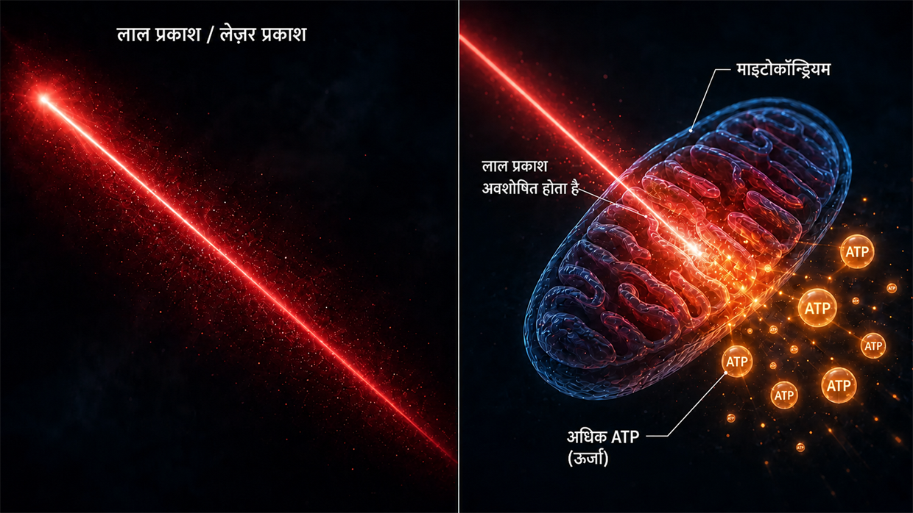
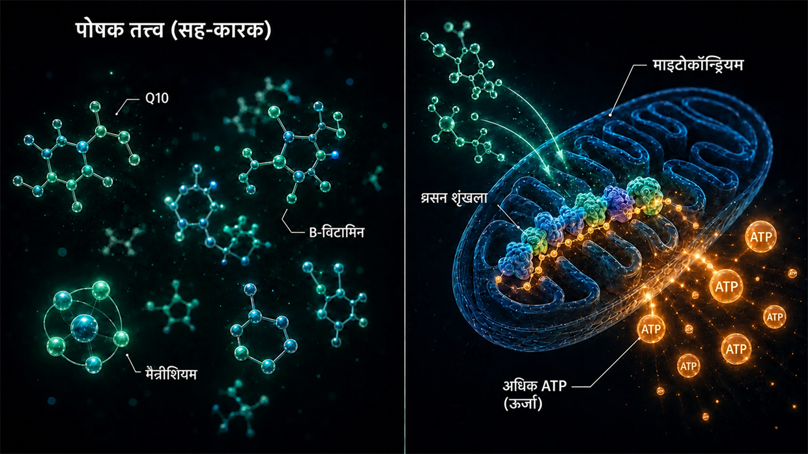

वैज्ञानिक स्रोत और क्लिनिकल साक्ष्य
यह पेज इस वेबसाइट पर मैं जो कुछ लिखता हूँ, उस सबकी नींव दिखाता है। मेरा मॉडल इस बात की मेरी व्यक्तिगत व्याख्या है कि मेरे टिनिटस में कोशिकीय स्तर पर क्या हुआ था। लेकिन इसके अलग-अलग निर्माण-खंड— स्टीरियोसिलिया (stereocilia) के भीतर एक्टिन तंतुओं के बीच के क्रॉसलिंकर, शोर के समय कैल्पेन की सक्रियता, ATP चयापचय, XIRP2 मरम्मत, मस्तिष्क का सेंट्रल गेन, कॉक्लिया की स्थानीय HPA धुरी, Q10, B-विटामिन और नियासिन का माइटोकॉन्ड्रियल प्रभाव— मनगढ़ंत बातें नहीं हैं। वे रिसर्च में दर्ज हैं और चिकित्सकीय प्रैक्टिस में आज़माए गए हैं।
भूमिका: दो प्रकार के साक्ष्य
एक ईमानदार शुरुआती बात: मैं इस पेज पर दो प्रकार के साक्ष्य रख रहा हूँ— और जानबूझकर उन्हें एक-दूसरे के साथ रख रहा हूँ, बिना शुरू से ही एक को दूसरे से ऊपर रखे।
पहला: बुनियादी अनुसंधान में क्रॉसलिंकर, कैल्पेन वगैरह पर तंत्र संबंधी अध्ययन। ये Nature Communications, Journal of Neuroscience, PNAS या eLife जैसी पत्रिकाओं में प्रकाशित सहकर्मी-समीक्षित (स्वतंत्र विशेषज्ञों द्वारा जाँचे गए) शोधपत्र हैं। वे दिखाते हैं कि कोशिकीय मशीनरी (यानी अलग-अलग कोशिकाओं के भीतर होने वाली प्रक्रियाएँ) कैसे काम करती है— क्रॉसलिंकर स्टीरियोसिलिया को कैसे स्थिर रखते हैं, शोर के दौरान कैल्पेन कैसे सक्रिय होते हैं, XIRP2 टूटे हुए हिस्सों को अस्थायी रूप से कैसे स्थिर करता है, ATP बढ़ने से शोर की क्षति के बाद सुनने की क्षमता उस सीमा तक कैसे बहाल होती है, जितनी व्यक्ति की शारीरिक क्षमता अनुमति देती है। मेरे शोर के कारण होने वाले टिनिटस के मॉडल को समझने के लिए ये अध्ययन अनिवार्य हैं।
दूसरा: अनुभवी डॉक्टरों के क्लिनिकल अभ्यास से मिले साक्ष्य (यानी अनुभवी डॉक्टरों ने वर्षों तक वास्तविक मरीज़ों में सीधे जो देखा और दर्ज किया है)। इनमें Dr. Lutz Wilden जैसी आवाज़ें शामिल हैं, जो 1987 से— यानी 35 से अधिक वर्षों से— भीतरी कान के मरीज़ों का लो-लेवल लेज़र थेरेपी से लगातार इलाज कर रहे हैं और इलाज से पहले तथा बाद के ऑडियोग्राम को मानक दस्तावेज़ के रूप में रखते हैं। इसके अलावा दुनिया भर में हज़ारों होम-लेज़र उपयोगकर्ता हैं, जो अपनी स्वयं की थेरेपी के साथ नियंत्रण ऑडियोमेट्री कराते हैं। स्विट्ज़रलैंड में Tinnitool ने भी 90 के दशक से इसी कार्य-तर्क (LLLT → हेयर सेल्स में ATP बढ़ना) के साथ हज़ारों मरीज़ों को उपचार दिया है। इसके साथ प्राग का Hahn समूह (दो प्रकाशित अध्ययनों में 540 मरीज़), जापान की Kyoto University और ब्राज़ील का एक शोध समूह भी हैं— हर जगह जैसे ही लेज़र पर्याप्त शक्तिशाली था, मापने योग्य सुधार हुए। बहुत कम शक्ति वाले लेज़र के जिन अध्ययनों में निष्पक्ष परीक्षण के दौरान कुछ नहीं मिला, उन्हें मैं नीचे ईमानदारी से संदर्भ में रखता हूँ। और Dr. Dietrich Klinghardt भी हैं, जिन्होंने दशकों तक भारी धातुओं और विषैले पदार्थों के बोझ पर काम किया है। यह व्यावहारिक अनुभव अधिकतर बड़ी वैज्ञानिक पत्रिकाओं (जैसे Nature Communications) में प्रकाशित नहीं हुआ है— और इसके कारण हैं, जिनकी बात Wilden स्वयं करते हैं। लेकिन इससे यह तथ्य नहीं बदलता कि पिछले दशकों में इस रास्ते से वास्तविक मरीज़ों की सचमुच उल्लेखनीय संख्या ठीक हुई है और इसके ऑडियोमेट्री प्रमाण मौजूद हैं।
दोनों स्रोत क्यों मायने रखते हैं
मुझे दोनों साक्ष्य-स्रोतों को साथ रखना अधिक ईमानदार लगता है, बजाय यह दिखावा करने के कि केवल सहकर्मी-समीक्षित सामग्री ही वह इकलौता सच है, जिसे गंभीरता से लिया जा सकता है। मेरे विचार में इसकी वजह यह है कि टिनिटस अनुसंधान के धन का एक बड़ा हिस्सा पेटेंट-सुरक्षित हियरिंग एड के विकास और दवाओं की पाइपलाइन में अधिक जाता है। जिन पोषक-तत्त्व संयोजनों को पेटेंट नहीं कराया जा सकता, विशिष्ट उच्च-खुराक लेज़र प्रोटोकॉल या डिटॉक्सिफ़िकेशन प्रोटोकॉल के लिए संस्थागत अनुसंधान में कोई रुचि ही नहीं है।
मैं न डॉक्टर हूँ, न वैज्ञानिक और न शोधकर्ता। मैं पहले टिनिटस से प्रभावित एक ऐसा व्यक्ति हूँ, जो दो बार ठीक हुआ और जिसके उपलब्ध ऑडियोमेट्री दस्तावेज़ केवल पहले दौर से संबंधित हैं। मैंने जुनून की हद तक बहुत कुछ पढ़ा, रिसर्च की और आज़माया है। जब मैं यहाँ किसी अध्ययन या डॉक्टर का उद्धरण देता हूँ, तो इसका यह मतलब नहीं कि वह इस बात का प्रमाण है कि मेरा रास्ता आपके लिए काम करेगा। इसका मतलब यह है कि जिन अलग-अलग निर्माण-खंडों का मैं सहारा लेता हूँ, उन्हें अनुसंधान और व्यावहारिक चिकित्सा में गंभीरता से लिया जाता है। तीव्र लक्षणों के मामले में— खासकर तीव्र टिनिटस या सुनने की क्षति में— कृपया पहले किसी ईएनटी डॉक्टर से परामर्श करें, ताकि शारीरिक कारणों की जाँच कराई जा सके।
विस्तार में जाने से पहले एक बात: मेरी पूरी रिसर्च से निकली सबसे महत्वपूर्ण समझ एक पैटर्न है, जो मुझे बार-बार मिला— जहाँ भी हेयर सेल्स में ऊर्जा-उत्पादन को साफ़ तौर पर बढ़ाया गया, वहाँ टिनिटस में सुधार हुआ। तीन बिल्कुल अलग रास्ते, एक साझा सूत्र। इसे मैं नीचे विस्तार से दिखाता हूँ: जो सीधे वहाँ जाना चाहते हैं, वे यहाँ क्लिक करें। बाकी सभी को मैं पहले बुनियाद तक ले चलता हूँ— कान की बनावट कैसी है और उसमें क्या टूटता है।
भाग 1: बुनियादी अनुसंधान से तंत्र संबंधी अध्ययन
स्टीरियोसिलिया में एक्टिन तंतुओं के बीच क्रॉसलिंकर
मुख्य पेज पर मैं संवेदी बालों की तुलना बिना पकी स्पेगेटी के एक गुच्छे से करता हूँ, जिसे छोटे प्रोटीन-पुल— क्रॉसलिंकर— आपस में जोड़े रखते हैं। ये क्रॉसलिंकर मेरी कल्पना नहीं हैं। ये प्रोटीन के तीन ठोस परिवार हैं— Plastin/Fimbrin (PLS1), Espin (ESPN) और Fascin-2 (FSCN2)— और संवेदी बालों में इनका अस्तित्व तथा कार्य 20 से अधिक वर्षों से आणविक स्तर पर दर्ज है।
Krey JF, Krystofiak ES, Dumont RA, et al. (2016). Plastin 1 widens stereocilia by transforming actin filament packing from hexagonal to liquid. Journal of Cell Biology, 215(4), 467–482. PMID: 27811163. लिंक
क्रॉसलिंकर की मात्रा निर्धारित करने वाला प्रमुख अध्ययन। मास स्पेक्ट्रोमेट्री की मदद से Krey et al. ने प्रमाणित किया कि एक अकेले स्टीरियोसिलियम में एक्टिन तंतुओं के बीच लगभग 30,500 Plastin-1 अणु, 16,100 Fascin-2 अणु और 14,800 Espin अणु होते हैं। स्वयं एक्टिन के बाद Plastin-1 पूरे स्टीरियोसिलियम में दूसरा सबसे अधिक पाया जाने वाला प्रोटीन है। कार्यशील Plastin-1 या Fascin-2 के बिना चूहों में सुनने की क्षमता घटी हुई थी; दोनों उत्परिवर्तनों वाले चूहे सबसे अधिक प्रभावित थे। Plastin-1 के बिना स्टीरियोसिलिया वाइल्ड-टाइप स्टीरियोसिलिया की तुलना में छोटे और पतले होते हैं। यह प्रत्यक्ष प्रयोगात्मक प्रमाण है कि क्रॉसलिंकर वास्तव में संवेदी बालों की संरचनात्मक अखंडता को संभालते हैं।
Perrin BJ, Strandjord DM, Narayanan P, et al. (2013). β-Actin and Fascin-2 Cooperate to Maintain Stereocilia Length. Journal of Neuroscience, 33(19), 8114–8121. PMID: 23658152. लिंक
Fascin-2 के कार्य करना बंद कर देने पर क्या होता है, इसका प्रत्यक्ष प्रमाण: Fascin-2 उत्परिवर्तन वाले चूहों में क्रमशः बढ़ने वाली उच्च-फ़्रीक्वेंसी श्रवण हानि और स्टीरियोसिलिया की दूसरी तथा तीसरी पंक्ति का विशिष्ट रूप से छोटा होना दिखाई देता है। उत्परिवर्तित Fascin-2 प्रकार अब भी एक्टिन से जुड़ता तो है, लेकिन तंतुओं को प्रभावी ढंग से आपस में जोड़ नहीं पाता— और ठीक इसी कारण बाल अपनी लंबाई खो देते हैं। यह वही संरचनात्मक अंतिम प्रभाव है, जिसका मैं मुख्य पेज पर शोर के कारण क्रॉसलिंकर के नष्ट होने के संदर्भ में वर्णन करता हूँ; यहाँ अंतर बस इतना है कि कैल्पेन द्वारा काटे जाने के बजाय आनुवंशिक उत्परिवर्तन से इसका अनुकरण किया गया है।
Sekerková G, Zheng L, Loomis PA, et al. (2004). Espins are multifunctional actin cytoskeletal regulatory proteins in the microvilli of chemosensory and mechanosensory cells. Journal of Neuroscience, 24(23), 5445–5456. PMID: 15190118. लिंक
स्टीरियोसिलिया में एक्टिन-क्रॉसलिंकर के रूप में Espin का संरचनात्मक निरूपण। Espin की पहचान समानांतर एक्टिन तंतुओं को गुच्छे में बाँधने वाले प्रोटीन के रूप में की गई है और कैल्शियम इसे बाधित नहीं कर सकता— यह महत्वपूर्ण है, क्योंकि सामान्य कार्य के दौरान स्टीरियोसिलिया के भीतर कैल्शियम में उतार-चढ़ाव होता रहता है। दोषपूर्ण Espin वाले चूहे बहरे होते हैं और उनमें संतुलन संबंधी विकार होते हैं। Espin उत्परिवर्तन इंसानों में भी आनुवंशिक बहरापन पैदा करते हैं।
इन सबका कुल मिलाकर अर्थ: यदि तीनों क्रॉसलिंकर— Plastin/Fimbrin, Espin, Fascin-2— आनुवंशिक उत्परिवर्तन या नॉकआउट के कारण ही श्रवण हानि और स्टीरियोसिलिया की संरचनात्मक विकृतियों तक ले जाते हैं, तो यह जैविक रूप से संभव लगता है कि इन या इनसे संबंधित क्रॉसलिंकर का अर्जित, शोर-प्रेरित कैल्पेन-विभाजन— जैसा मैं मुख्य पेज पर वर्णन करता हूँ— वही संरचनात्मक अंतिम प्रभाव पैदा कर सकता है।
शोर के दौरान कैल्पेन का सक्रिय होना
शोर के दौरान हेयर सेल में भारी मात्रा में कैल्शियम प्रवेश करता है। कैल्शियम का यह अतिरिक्त बोझ कैल्पेन को सक्रिय करता है— ये कैल्शियम-निर्भर प्रोटीएज़ एंज़ाइम हैं, जो इसके बाद एक्टिन को आपस में जोड़ने वाले प्रोटीनों को काटते हैं। दो स्वतंत्र शोध प्रयोगशालाओं ने अलग-अलग कैल्पेन अवरोधकों की मदद से प्रमाणित किया है कि यह तंत्र वास्तविक है।
Lai R, Fang Q, Wu F, Pan S, Haque K, Sha SH. (2023). Prevention of noise-induced hearing loss by calpain inhibitor MDL-28170 is associated with upregulation of PI3K/Akt survival signaling pathway. Frontiers in Cellular Neuroscience, 17, 1199656. लिंक
कैल्पेन तंत्र का प्रत्यक्ष प्रमाण: शोर हेयर सेल्स में µ-Calpain और m-Calpain को सक्रिय करता है तथा कैल्पेन अवरोधक MDL-28170 श्रवण हानि और सिनैप्स की हानि, दोनों को रोकता है। अध्ययन यह भी दिखाता है कि कैल्पेन संरचनात्मक प्रोटीन α-Fodrin को काटता है— जो कोशिका के कॉर्टेक्स में स्पेक्ट्रिन और एक्टिन को आपस में जोड़ने वाला प्रोटीन है। यह स्टीरियोसिलिया-विशिष्ट Plastin/Espin/Fascin-2 के बिल्कुल समान प्रकार का क्रॉसलिंकर नहीं है, लेकिन यह प्रमाणित करता है कि शोर के दौरान कैल्पेन सक्रिय होता है और एक्टिन को आपस में जोड़ने वाले प्रोटीनों पर हमला करता है। इस दौरान स्टीरियोसिलिया के क्रॉसलिंकर भी प्रभावित हो सकते हैं— यह इन परस्पर मिलते निष्कर्षों से निकली एक युक्तिसंगत परिकल्पना है।
Yamaguchi T, Yoneyama M, Ogita K. (2017). Calpain inhibitor alleviates permanent hearing loss induced by intense noise by preventing disruption of gap junction-mediated intercellular communication in the cochlear spiral ligament. European Journal of Pharmacology, 803, 187–194. PMID: 28366808. लिंक
एक अलग अवरोधक (PD150606) का उपयोग करने वाली दूसरी प्रयोगशाला से कैल्पेन द्वारा होने वाली क्षति के तंत्र की पुष्टि। यह तस्वीर को क्षति के एक दूसरे स्थान तक फैलाता है: शोर के दौरान कैल्पेन स्पाइरल लिगामेंट में गैप-जंक्शन संचार पर भी हमला करता है— यानी कॉक्लिया की बगल वाली दीवार पर। शोर से होने वाली क्षति कभी एक ही स्थान तक सीमित नहीं रहती।
पृष्ठभूमि के लिए अध्ययन: Fettiplace R, Hackney CM. (2006). The sensory and motor roles of auditory hair cells. Nature Reviews Neuroscience, 7(1), 19–29.— हेयर सेल्स की बनावट और कार्य पर क्लासिक समीक्षा।
XIRP2 द्वारा एक्टिन की मरम्मत (फ़ेज़ 1)
Wagner EL, Im JS, Sala S, et al. (2023). Repair of noise-induced damage to stereocilia F-actin cores is facilitated by XIRP2 and its novel mechanosensor domain. eLife, 12, e72681. PMID: 37294664. लिंक
हेयर सेल्स की स्वयं-मरम्मत पर सबसे महत्वपूर्ण तंत्र संबंधी शोधपत्र। शोर के कारण संवेदी बालों के एक्टिन-ढाँचे में मापने योग्य “Gaps” बनते हैं। चूहों में इन्हें एक सप्ताह के भीतर नए संश्लेषित γ-एक्टिन से बंद कर दिया जाता है। मरम्मत-प्रोटीन XIRP2 क्षति को यांत्रिक रूप से पहचानता है और मरम्मत शुरू करता है। XIRP2 के बिना क्षति स्थायी बनी रहती है।
मुख्य पेज पर मैं XIRP2 का वर्णन ऐसे “बख़्तरबंद टेप” के रूप में करता हूँ, जो टूटने की जगहों को अस्थायी सहारा देकर स्थिर करता है (फ़ेज़ 1)। वास्तविक फ़ेज़-2 मरम्मत— नया एक्टिन बनाना, नए क्रॉसलिंकर लगाना— इस अध्ययन में पूरी तरह पोषित प्रयोगशाला के चूहों में लगभग एक सप्ताह लेती है। साथ ही ऊर्जा के हैम्स्टर-व्हील में फँसे तनावग्रस्त वयस्क इंसान के लिए इसका क्या अर्थ है, यही निर्णायक सवाल है— क्योंकि उसके पास अक्सर ठीक वही ऊर्जा नहीं होती, जिसकी इस मरम्मत को ज़रूरत है।
NIH द्वारा वित्तपोषित (R01DC021176)।
मरम्मत के लीवर के रूप में ATP बढ़ाना: AC102
औषधीय मार्ग पर यह मेरे शोर-प्रोटोकॉल का सबसे महत्वपूर्ण हिस्सा है: मेरे विचार में, यदि कोशिका के पास बहुत कम ऊर्जा हो, तो वह इतनी धीमी गति से और इतने अपर्याप्त रूप से अपनी मरम्मत करती है कि रोज़ के भारों का सामना नहीं कर पाती। ये वे अध्ययन हैं, जो दिखाते हैं कि दवा-विज्ञान के नज़रिए से इस विचार को गंभीरता से लिया जा रहा है— बर्लिन की एक दवा कंपनी इस समय ऐसी दवा विकसित कर रही है, जो ठीक इसी तंत्र को लक्ष्य बनाती है।
Rommelspacher H, Bera S, Brommer B, Ward R et al. (2024). A single dose of AC102 restores hearing in a guinea pig model of noise-induced hearing loss to almost prenoise levels. PNAS, 121(15), e2314763121. PMID: 38557194. लिंक
AC102 पर प्रमुख अध्ययन। इन-विट्रो परीक्षणों ने दिखाया कि AC102 कोशिकीय ATP उत्पादन को उल्लेखनीय रूप से बढ़ाता है और साथ ही प्रतिक्रियाशील ऑक्सीजन प्रजातियों (ROS) को विघटित करता है। पशु मॉडल में एक अकेली खुराक ने शोर की चोट के बाद सुनने की क्षमता में सांख्यिकीय रूप से महत्त्वपूर्ण सुधार किया— अध्ययन के शीर्षक में इसे “शोर से पहले के स्तर के लगभग बराबर” बताया गया है (ठोस रूप से: 13–31 dB का सुधार, जबकि शोर के कारण हुई औसत श्रवण हानि 80 dB थी— सांख्यिकीय रूप से महत्त्वपूर्ण, लेकिन पूर्ण बहाली नहीं)। ATP उत्पादन को बढ़ाना, ROS को घटाना और सिनैप्स की रक्षा करना— ये तंत्र बिल्कुल मेरे मॉडल के तंत्र हैं, बस यहाँ उन्हें दवा के ज़रिए जबरन चलाया गया है।
Tziridis K, Rasheed J, Kwiatkowska M, et al. (2025). A Single Dose of AC102 Reverts Tinnitus by Restoring Ribbon Synapses in Noise-Exposed Mongolian Gerbils. International Journal of Molecular Sciences, 26(11), 5124. लिंक
यहाँ यह भी जाँचा गया कि क्या AC102 टिनिटस-विशिष्ट व्यवहार-पैटर्न को भी उलट देता है। परिणाम: हाँ, काफ़ी हद तक— और हेयर सेल्स तथा श्रवण तंत्रिका के बीच के रिबन सिनैप्स में सांख्यिकीय रूप से महत्त्वपूर्ण सुधार हुआ। यह इस बात का प्रत्यक्ष प्रमाण है कि कोशिकीय ऊर्जा लौटने पर श्रवण तंत्रिका पर ग्लूटामेट की लगातार होने वाली फ़ायरिंग रुक जाती है।
Nieratschker M, Yildiz E, Gerlitz M, et al. (2024). A preoperative dose of the pyridoindole AC102 improves the recovery of residual hearing in a gerbil animal model of cochlear implantation. Cell Death & Disease, 15, 531. लिंक
यह AC102 के साक्ष्यों को क्षति के एक दूसरे मार्ग तक फैलाता है: कॉक्लियर इम्प्लांटेशन की चोट में भी यह सक्रिय पदार्थ बची हुई सुनने की क्षमता की रक्षा करता है। यह दिखाता है कि तंत्र क्षति के कारण से स्वतंत्र होकर काम करता है— चाहे शोर से हुई यांत्रिक चोट हो या ऑपरेशन से हुई चोट, कोशिकीय आपात-शृंखला समान होती है और ATP वाला लीवर दोनों मामलों में काम करता है।
AudioCure Pharma GmbH. Clinical Study NCT05776459. AC102 इस समय अचानक हुई सेंसरिन्यूरल श्रवण हानि (SSNHL) वाले मरीज़ों पर पूरे यूरोप में चल रहे फ़ेज़-2 अध्ययन में है— 210 मरीज़ शामिल किए गए, भर्ती पूरी हो चुकी है और परिणाम अभी आने बाकी हैं। लिंक
तनाव, HPA धुरी और एक न्यूरोएंडोक्राइन अंग के रूप में कॉक्लिया
तनाव के कारण होने वाले टिनिटस को वैज्ञानिक रूप से समझना शोर के कारण होने वाले टिनिटस की तुलना में अधिक कठिन है। मेरे मॉडल के लिए यहाँ निर्णायक बात यह है: सामान्य क्रॉनिक तनाव HPA धुरी के रास्ते अपना अलग टिनिटस टोन पैदा नहीं करता। लेकिन वह भीतरी कान को क्षति के प्रति अधिक संवेदनशील बना सकता है। सिम्पैथेटिक तंत्र की सक्रियता से रक्त-परिसंचरण कम हो सकता है; यदि स्ट्रिया वैस्क्युलारिस की रक्तवाहिकाएँ संकरी हो जाएँ, तो भीतरी कान शोर या दूसरे प्रभावों से होने वाली क्षति के प्रति अधिक संवेदनशील हो सकता है। कॉक्लिया के स्थानीय HPA संकेत-तंत्र पर नीचे दिए गए शोधपत्र भीतरी कान की शारीरिक प्रक्रियाओं का वर्णन करते हैं। मैं उनसे टिनिटस पैदा करने वाले किसी स्वतंत्र HPA मार्ग का निष्कर्ष नहीं निकालता।
Graham CE, Vetter DE. (2011). The mouse cochlea expresses a local hypothalamic-pituitary-adrenal equivalent signaling system and requires corticotropin-releasing factor receptor 1 to establish normal hair cell innervation and cochlear sensitivity. Journal of Neuroscience, 31(4), 1267–1278. PMID: 21273411. लिंक
प्रमुख अध्ययन। चूहे की कॉक्लिया में पूरा HPA धुरी संकेत-तंत्र स्थानीय रूप से अभिव्यक्त होता है: Corticotropin-Releasing-Factor (CRF), CRF1 रिसेप्टर, ACTH, Mineralocorticoid रिसेप्टर और Glucocorticoid रिसेप्टर। CRF1 रिसेप्टर के नॉकआउट वाले चूहों में हेयर सेल्स की तंत्रिका-आपूर्ति बाधित होती है और कॉक्लिया की संवेदनशीलता कम दिखाई देती है। इस तरह अध्ययन कॉक्लिया की एक स्थानीय नियामक प्रणाली का वर्णन करता है, किसी स्वतंत्र HPA-टिनिटस मार्ग का प्रमाण नहीं।
Graham CE, Basappa J, Vetter DE. (2010). A corticotropin-releasing factor system expressed in the cochlea modulates hearing sensitivity and protects against noise-induced hearing loss. Neurobiology of Disease, 38(2), 246–258. PMID: 20109547. लिंक
Graham/Vetter 2011 से पहले का अध्ययन: यह दिखाता है कि कॉक्लिया का स्थानीय CRF तंत्र सुनने की संवेदनशीलता को मॉड्यूलेट करता है और शोर के कारण होने वाली श्रवण हानि से रक्षा कर सकता है।
Furuta H, Mori N, Sato C, et al. (1994). Mineralocorticoid type I receptor in the rat cochlea: mRNA identification by PCR and in situ hybridization. Hearing Research, 78(2), 175–180. PMID: 7982810. लिंक
ऐतिहासिक पहला वर्णन: कॉक्लिया की स्ट्रिया वैस्क्युलारिस में Mineralocorticoid रिसेप्टर अभिव्यक्त होते हैं— यानी ठीक भीतरी कान की उस “बैटरी” में, जो एंडोलिम्फ़ के पोटैशियम भंडार को बनाए रखती है। कॉर्टिसोल वहाँ Mineralocorticoid रिसेप्टरों के माध्यम से पोटैशियम के स्राव को मॉड्यूलेट कर सकता है।
Mazurek B, Haupt H, Olze H, Szczepek AJ. (2012). Stress and tinnitus – from bedside to bench and back. Frontiers in Systems Neuroscience, 6, 47. लिंक
बर्लिन की Charité से व्यवस्थित समेकन: Mazurek और Szczepek, Graham/Vetter तथा Furuta के मूल निष्कर्षों को इस बारे में तीन जाँची जा सकने वाली परिकल्पनाओं में जोड़ते हैं कि तनाव टिनिटस कैसे पैदा कर सकता है— कॉक्लिया की स्थानीय HPA प्रणाली के रास्ते, स्ट्रिया वैस्क्युलारिस में Mineralocorticoid रिसेप्टरों के कॉर्टिसोल-मॉड्यूलेशन (जिसका असर पोटैशियम स्राव पर पड़ता है) के रास्ते और श्रवण-पथ में ग्लूटामेट द्वारा संचालित प्लास्टिसिटी के रास्ते। ये लेखकों की परिकल्पनाएँ हैं; मैं इन्हें टोन की उत्पत्ति के अपने मॉडल के रूप में नहीं अपनाता।
Hébert S, Lupien SJ. (2007). The sound of stress: Blunted cortisol reactivity to psychosocial stress in tinnitus sufferers. Neuroscience Letters, 411(2), 138–142. PMID: 17084027. लिंक
टिनिटस के मरीज़ तीव्र मनोसामाजिक तनाव के प्रति देरी से और मंद पड़ी हुई कॉर्टिसोल प्रतिक्रिया दिखाते हैं। इस तरह अध्ययन जाँचे गए प्रभावित लोगों में बदली हुई तनाव-प्रतिक्रिया का वर्णन करता है; यह नहीं दिखाता कि HPA की थकावट टिनिटस पैदा करती है।
Manohar S, Chen GD, Li L, Liu X, Salvi R. (2023). Chronic stress induced loudness hyperacusis, sound avoidance and auditory cortex hyperactivity. Hearing Research, 431, 108726. PMID: 36905854. लिंक
इस पशु मॉडल में क्रॉनिक कॉर्टिसोल-तनाव के तहत चूहों में हाइपरअक्यूसिस व्यवहार और ऑडिटरी कॉर्टेक्स में टिनिटस जैसे पैटर्न विकसित हुए— किसी भी तीव्र शोर-संपर्क के बिना। यह मेरे मॉडल में किसी स्वतंत्र तनाव-टिनिटस मार्ग का प्रमाण नहीं है।
Schaette R, McAlpine D. (2011). Tinnitus with a Normal Audiogram: Physiological Evidence for Hidden Hearing Loss and Computational Model. Journal of Neuroscience, 31(38), 13452–13457. लिंक
Schaette और McAlpine सेंट्रल गेन (Central Gain) मॉडल का वर्णन करते हैं: जब श्रवण इनपुट घट जाता है, तो केंद्रीय श्रवण तंत्र अपनी संवेदनशीलता बढ़ा देता है। मेरे मॉडल में सेंट्रल गेन पहले से मौजूद सक्रिय गलत संकेत को ही बढ़ाता है; केवल इनपुट की हानि से टिनिटस टोन पैदा नहीं होता।
Auerbach BD, Rodrigues PV, Salvi RJ. (2014). Central Gain Control in Tinnitus and Hyperacusis. Frontiers in Neurology, 5, 206.
Eggermont JJ, Roberts LE. (2004). The neuroscience of tinnitus. Trends in Neurosciences, 27(11), 676–682.
Auerbach, Rodrigues और Salvi टिनिटस तथा हाइपरअक्यूसिस के संदर्भ में सेंट्रल गेन की अवधारणा पर चर्चा करते हैं; यह इस समीक्षा-पत्र की स्थिति है, टोन की उत्पत्ति का मेरा मॉडल नहीं। टिनिटस और हाइपरअक्यूसिस साथ हो सकते हैं, लेकिन मैं उन्हें केंद्रीय प्रवर्धन के दुष्प्रभाव नहीं मानता। Eggermont/Roberts (क्लासिक): टिनिटस के साथ ऑडिटरी कॉर्टेक्स में स्वतः होने वाली तंत्रिकीय गतिविधि और टोनोटोपिक संगठन में बदलाव पाया जाता है।
ट्रॉमा, संचित तनाव और पास के तंत्रिका-पथों का साथ में उत्तेजित होना
इससे अलग एक केंद्रीय मार्ग इस सवाल से जुड़ा है: कोई संचित ट्रॉमा वर्षों बाद भी शारीरिक लक्षण कैसे पैदा कर सकता है— और मस्तिष्क में कोई स्थानीय, अपने आप काम करने वाला तनाव-केंद्र पास के तंत्रिका-केंद्रों को वास्तव में साथ कैसे सक्रिय कर सकता है?
ठीक इसी तंत्र को Michael Prgomet समझाने के लिए “इलेक्ट्रोस्टैटिक वोल्टेज-क्षेत्र” कहते हैं (देखें सेक्शन 14)। अपने तनाव के कारण होने वाले टिनिटस वाले पेज पर मैंने इस मॉडल को सरल भाषा में समझाया है। यह सेक्शन दिखाता है: इस मॉडल की नींव बनाने वाले अलग-अलग न्यूरोबायोलॉजिकल निर्माण-खंड विज्ञान में अच्छी तरह स्थापित हैं। इस समेकन की मौलिकता इन निर्माण-खंडों को एक सुसंगत व्याख्यात्मक मॉडल में जोड़ने में है— अलग-अलग तंत्र स्वयं सहकर्मी-समीक्षित और कई बार दोहराए जा चुके हैं।
5.1.1 ट्रॉमा मापने योग्य न्यूरोबायोलॉजिकल निशान छोड़ता है
तनाव का कोई प्रबल या क्रॉनिक अनुभव मस्तिष्क के कुछ क्षेत्रों की संरचना और कार्य को प्रमाणित रूप से बदल देता है। ट्रॉमा “केवल मनोवैज्ञानिक” बनकर नहीं रहता, बल्कि तंत्रिका तंत्र में शारीरिक रूप से जुड़ जाता है।
McEwen BS, Nasca C, Gray JD. (2016). Stress Effects on Neuronal Structure: Hippocampus, Amygdala, and Prefrontal Cortex. Neuropsychopharmacology, 41(1), 3–23. PMID: 26076834. लिंक
यह वर्णन करता है कि क्रॉनिक तनाव हिप्पोकैम्पस, अमिग्डाला और प्रीफ्रंटल कॉर्टेक्स में मापने योग्य संरचनात्मक तथा कार्यात्मक बदलाव पैदा करता है। ठीक यही क्षेत्र स्मृति, डर, आकलन और तनाव-नियमन के लिए केंद्रीय हैं— यानी ठीक वे संरचनाएँ, जो लगातार सक्रिय रहने वाले तनाव-पैटर्न में भूमिका निभाती हैं।
Sherin JE, Nemeroff CB. (2011). Post-traumatic stress disorder: the neurobiological impact of psychological trauma. Dialogues in Clinical Neuroscience, 13(3), 263–278. PMID: 22034143. लिंक
ट्रॉमा के लंबे समय तक रहने वाले न्यूरोबायोलॉजिकल प्रभावों की समीक्षा: अमिग्डाला की अति-प्रतिक्रियाशीलता, प्रीफ्रंटल नियंत्रण की कमियाँ, हिप्पोकैम्पस में बदलाव और तनाव-हार्मोन तंत्रों में टिकाऊ बदलाव। इसलिए ट्रॉमा “स्थिति ख़त्म होते ही ख़त्म” नहीं हो जाता— वह तंत्रिका तंत्र में जुड़ा रहता है।
Yehuda R, LeDoux J. (2007). Response Variation following Trauma: A Translational Neuroscience Approach to Understanding PTSD. Neuron, 56(1), 19–32. PMID: 17920012. लिंक
यह दिखाता है कि ट्रॉमा HPA धुरी, नॉरएड्रेनर्जिक तंत्र, स्वायत्त प्रतिक्रियाशीलता और हिप्पोकैम्पस के कार्य को लंबे समय तक बदल सकता है। यह संचित तनाव-पैटर्नों का तंत्र संबंधी आधार है, जो पृष्ठभूमि में चलते रह सकते हैं।
5.1.2 एलोस्टैटिक भार— क्यों क्रॉनिक होने पर ही तनाव समस्या बनता है
तीव्र, परिस्थिति से जुड़ा तनाव स्वस्थ होता है और उसे अच्छी तरह सँभाला जा सकता है। तनाव के कारण होने वाले टिनिटस वाले पेज पर मैं जिन घटनाओं का वर्णन करता हूँ, वे किसी सामान्य झगड़े या तीव्र भार से पैदा नहीं होतीं— वे तभी पैदा होती हैं, जब सिस्टम अब रिकवर नहीं कर पाता और समय के साथ भार जमा होता जाता है।
McEwen BS. (1998). Stress, Adaptation, and Disease: Allostasis and Allostatic Load. Annals of the New York Academy of Sciences, 840(1), 33–44. PMID: 9629234. लिंक
एलोस्टैटिक भार की अवधारणा की नींव रखता है। तीव्र तनाव उपयोगी होता है; क्रॉनिक, संचित भार सिस्टम को नुकसान पहुँचाता है। ठीक यही बिंदु मेरे मॉडल को इस भ्रामक कथन से स्पष्ट रूप से अलग करता है कि “तनाव आम तौर पर टिनिटस पैदा करता है”। यहाँ बात रोज़मर्रा के तनाव की नहीं है— बात उन सिस्टमों की है, जिन पर पहले से क्रॉनिक भार है।
McEwen BS, Stellar E. (1993). Stress and the individual: mechanisms leading to disease. Archives of Internal Medicine, 153(18), 2093–2101. PMID: 8379800.
यह उन तंत्रों का वर्णन करता है, जिनके रास्ते क्रॉनिक तनाव बीमारी तक ले जाता है— संचित भार के रास्ते, अलग-अलग घटनाओं के रास्ते नहीं। यह स्पष्ट रूप से समझाता है कि रोज़मर्रा के तनाव वाला हर व्यक्ति इन घटनाओं से प्रभावित क्यों नहीं होता, बल्कि केवल वे लोग क्यों प्रभावित होते हैं, जिनका सिस्टम पहले से लंबे समय से अस्थिर है।
5.1.3 सेंट्रल सेंसिटाइज़ेशन— पहले से भारग्रस्त तंत्रिका तंत्र का प्रवर्धक
क्रॉनिक भार में केंद्रीय तंत्रिका तंत्र उद्दीपनों के प्रति अधिक संवेदनशील हो जाता है। अवरोध घटता है, उत्तेजनीयता बढ़ती है और उद्दीपन की दहलीज़ नीचे चली जाती है। जो उद्दीपन पहले दहलीज़ से नीचे थे, वे अचानक लक्षण पैदा करने के लिए पर्याप्त हो जाते हैं। यह उस स्थिति का वैज्ञानिक वर्णन है, जिसे मैं तनाव के कारण होने वाले टिनिटस वाले पेज पर “पहले से भारग्रस्त, उद्दीपनों के प्रति खुला सिस्टम” कहता हूँ।
Woolf CJ. (2011). Central sensitization: Implications for the diagnosis and treatment of pain. Pain, 152(3 Suppl), S2–S15. PMID: 20961685. लिंक
सेंट्रल सेंसिटाइज़ेशन को सामान्य या दहलीज़ से नीचे के इनपुट उद्दीपनों के प्रति केंद्रीय न्यूरॉन्स की बढ़ी हुई प्रतिक्रियाशीलता के रूप में परिभाषित करता है। आधुनिक दर्द-अनुसंधान का स्थापित आधारस्तंभ। मेरा मॉडल इस सिद्धांत को तनाव के कारण होने वाले टिनिटस पर लागू करता है।
Latremoliere A, Woolf CJ. (2009). Central sensitization: a generator of pain hypersensitivity by central neural plasticity. The Journal of Pain, 10(9), 895–926. PMID: 19712899. लिंक
सेंट्रल सेंसिटाइज़ेशन के कोशिकीय और आणविक तंत्रों का विस्तृत वर्णन। यह दिखाता है कि पहले से भारग्रस्त सिस्टम ही वह आवश्यक स्थिति कैसे बनाता है, जिसमें छोटे तनाव-क्षेत्र लक्षण पैदा कर सकते हैं।
Yunus MB. (2008). Central sensitivity syndromes: a new paradigm and group nosology for fibromyalgia and overlapping conditions. Seminars in Arthritis and Rheumatism, 37(6), 339–352. PMID: 18191990. लिंक
सेंट्रल सेंसिटाइज़ेशन की अवधारणा को फ़ाइब्रोमायल्जिया, क्रॉनिक थकावट, इरिटेबल बाउल, क्रॉनिक टिनिटस और संबंधित सिंड्रोमों पर लागू करता है। यह ठीक वही सेतु है, जो तनाव के कारण होने वाले टिनिटस के मेरे मॉडल को वैज्ञानिक आधार देता है।
5.1.4 एफ़ैप्टिक कपलिंग— पास की तंत्रिका कोशिकाओं का प्रत्यक्ष विद्युत सह-उद्दीपन
वैन-डे-ग्राफ़ रूपक के पीछे यही ठोस न्यूरोफ़िज़ियोलॉजिकल आधार है। जब कोई तंत्रिकीय क्षेत्र बहुत तीव्रता से और एक साथ फ़ायर करता है, तो वह स्थानीय विद्युत-क्षेत्र पैदा करता है, जो पास की तंत्रिका कोशिकाओं को वास्तव में प्रभावित कर सकते हैं— क्लासिक सिनैप्स के बिना। पर्याप्त गतिविधि होने पर ये क्षेत्र पड़ोसी कोशिकाओं को उद्दीपन की दहलीज़ के पार धकेल सकते हैं और उनके फ़ायरिंग-व्यवहार को एक साथ ला सकते हैं। “तंत्रिका A फ़ायर करती है, तंत्रिका B भी साथ खिंच जाती है” के पीछे ठीक यही तंत्र है।
Anastassiou CA, Perin R, Markram H, Koch C. (2011). Ephaptic coupling of cortical neurons. Nature Neuroscience, 14(2), 217–223. PMID: 21240273. लिंक
कॉर्टेक्स में एफ़ैप्टिक कपलिंग का प्रत्यक्ष प्रयोगात्मक प्रमाण। अध्ययन ने दिखाया कि कोशिका-बाहरी विद्युत-क्षेत्र पास के न्यूरॉन्स की झिल्ली के वोल्टेज को बदल सकते हैं और ऐक्शन पोटेंशियल के समय को एक साथ ला सकते हैं। यह इस बात का केंद्रीय प्रमाण है कि अत्यधिक सक्रिय तंत्रिका कोशिकाओं का समूह पड़ोसी कोशिकाओं को वास्तव में विद्युत रूप से साथ सक्रिय कर सकता है।
Buzsáki G, Anastassiou CA, Koch C. (2012). The origin of extracellular fields and currents— EEG, ECoG, LFP and spikes. Nature Reviews Neuroscience, 13(6), 407–420. PMID: 22595786. लिंक
मस्तिष्क में विद्युत-क्षेत्रों की उत्पत्ति पर बुनियादी समीक्षा। यह बताती है कि एक साथ सक्रिय न्यूरॉन्स के समूह वोल्टेज ग्रेडिएंट के रास्ते दूसरे न्यूरॉन्स को कार्यात्मक रूप से कैसे प्रभावित कर सकते हैं। यह स्पष्ट करती है: ये उच्च-वोल्टेज गोले की तरह “बड़ी बिजली की चमकें” नहीं हैं— ये छोटे, स्थानीय रूप से सीमित क्षेत्रीय प्रभाव हैं, लेकिन वे वास्तविक और जैविक रूप से प्रभावी हैं।
Fröhlich F, McCormick DA. (2010). Endogenous electric fields may guide neocortical network activity. Neuron, 67(1), 129–143. PMID: 20624597. लिंक
यह दिखाता है कि शरीर के भीतर पैदा होने वाले विद्युत-क्षेत्र तंत्रिकीय नेटवर्क की गतिविधि के साथ केवल चलते नहीं हैं, बल्कि कारणात्मक रूप से उसे संचालित करने में भी भाग लेते हैं। यह उस धारणा के ताबूत में एक भारी कील है कि मस्तिष्क में विद्युत-क्षेत्रों के प्रभाव केवल साथ होने वाली एक घटना हैं।
5.1.5 किंडलिंग— बार-बार उद्दीपन पैटर्न के लिए रास्ता बनाता है
जब किसी तंत्रिकीय क्षेत्र को बार-बार दहलीज़ से नीचे उद्दीपित किया जाता है, तो समय के साथ उसे सक्रिय करना लगातार आसान होता जाता है— और वह धीरे-धीरे अधिक पड़ोसी क्षेत्रों को भी अपने साथ सक्रिय करने लगता है। यह घटना मिर्गी के अनुसंधान में स्थापित है और अब क्रॉनिक दर्द, ट्रॉमा तथा उद्दीपन की स्थितियों पर भी लागू की जा चुकी है।
Goddard GV, McIntyre DC, Leech CK. (1969). A permanent change in brain function resulting from daily electrical stimulation. Experimental Neurology, 25(3), 295–330. PMID: 4981856.
किंडलिंग की घटना पर क्लासिक मूल शोधपत्र। बार-बार दहलीज़ से नीचे होने वाला उद्दीपन मस्तिष्क के कार्य में स्थायी बदलाव पैदा करता है— समय के साथ उस क्षेत्र को सक्रिय करना लगातार आसान होता जाता है।
Post RM. (2007). Kindling and sensitization as models for affective episode recurrence, cyclicity, and tolerance phenomena. Neuroscience & Biobehavioral Reviews, 31(6), 858–873. PMID: 17555817. लिंक
किंडलिंग की अवधारणा को भावात्मक विकारों, PTSD और क्रॉनिक तनाव की स्थितियों पर लागू करता है। यह वैज्ञानिक रूप से समझाता है कि बार-बार सक्रिय होने वाले क्रॉनिक तनाव-पैटर्न समय के साथ शांत होने के बजाय अधिक शक्तिशाली और अधिक बड़े क्षेत्र में क्यों फैल सकते हैं— ठीक वही घटना, जिसका मैं तनाव के कारण होने वाले टिनिटस वाले पेज पर वर्णन करता हूँ।
5.1.6 ग्लिया का सक्रिय होना और न्यूरोइन्फ़्लेमेशन— जैवरासायनिक प्रवर्धक
क्रॉनिक उद्दीपन माइक्रोग्लिया और एस्ट्रोसाइट्स को सक्रिय करता है। ये संदेशवाहक पदार्थ (TNF-α, IL-1β, IL-6) छोड़ते हैं, जो आसपास के न्यूरॉन्स की उत्तेजनीयता मापने योग्य रूप से बढ़ाते हैं— और इस तरह पूरे क्षेत्र को अधिक आसानी से सक्रिय होने वाली स्थिति में पहुँचा देते हैं। “पहले से भारग्रस्त सिस्टम” और “तनाव-क्षेत्र रास्ता बना सकता है” के बीच यही जैवरासायनिक प्रवर्धक है।
Ji RR, Nackley A, Huh Y, Terrando N, Maixner W. (2018). Neuroinflammation and Central Sensitization in Chronic and Widespread Pain. Anesthesiology, 129(2), 343–366. PMID: 29462012. लिंक
ग्लिया का सक्रिय होना सेंट्रल सेंसिटाइज़ेशन को कैसे आगे बढ़ाता है, इसका प्रत्यक्ष प्रमाण। माइक्रोग्लिया और एस्ट्रोसाइट्स केवल निष्क्रिय सहायक कोशिकाएँ नहीं हैं— वे तंत्रिकीय उत्तेजनीयता को सक्रिय रूप से मॉड्यूलेट करते हैं और क्रॉनिक भार में तंत्रिका-ऊतक को स्थायी रूप से उद्दीपनों के प्रति अधिक खुली स्थिति में पहुँचा सकते हैं।
Michopoulos V, Powers A, Gillespie CF, Ressler KJ, Jovanovic T. (2017). Inflammation in Fear- and Anxiety-Based Disorders: PTSD, GAD, and Beyond. Neuropsychopharmacology, 42(1), 254–270. PMID: 27510423. लिंक
PTSD और क्रॉनिक चिंता तंत्रिका तंत्र में मापने योग्य सूजन संबंधी बदलावों से जुड़ी हैं। इससे चक्र पूरा होता है: ट्रॉमा → तनाव → न्यूरोइन्फ़्लेमेशन → उद्दीपनों के प्रति अधिक खुला ऊतक → संचित तनाव-पैटर्न को अधिक आसानी से सक्रिय किया जा सकना।
5.1.7 थैलामोकॉर्टिकल डिसरिदमिया— टिनिटस से सीधा संबंध
क्रॉनिक टिनिटस में MEG और EEG अध्ययन थैलामस तथा ऑडिटरी कॉर्टेक्स के बीच रोगात्मक दोलन-पैटर्न दिखाते हैं। गतिविधि का स्थानीय रूप से बदला हुआ पैटर्न लगातार बनी रहने वाली थीटा-गामा कपलिंग पैदा करता है, जो लगातार टोन सुनाई देने में योगदान दे सकती है। यह अत्यधिक सक्रिय तनाव-क्षेत्र और लगातार बनी रहने वाली टिनिटस-अनुभूति के बीच सीधा न्यूरोफ़िज़ियोलॉजिकल सेतु है।
Llinás RR, Ribary U, Jeanmonod D, Kronberg E, Mitra PP. (1999). Thalamocortical dysrhythmia: A neurological and neuropsychiatric syndrome characterized by magnetoencephalography. PNAS, 96(26), 15222–15227. PMID: 10611366. लिंक
अत्यधिक संवेदनशील MEG तकनीक से मापे गए क्रॉनिक तंत्रिकीय लक्षणों के तंत्र के रूप में थैलामोकॉर्टिकल डिसरिदमिया की अवधारणा की नींव रखता है। ये ठीक वही MEG उपकरण हैं, जिनसे मस्तिष्क में बहुत छोटे, स्थानीय रूप से सीमित वोल्टेज-क्षेत्रों को भी दृश्यमान बनाया जा सकता है।
De Ridder D, Vanneste S, Langguth B, Llinás R. (2015). Thalamocortical Dysrhythmia: A Theoretical Update in Tinnitus. Frontiers in Neurology, 6, 124. PMID: 26106362. लिंक
MEG डेटा के साथ इस अवधारणा को सीधे क्रॉनिक टिनिटस पर लागू करता है। यह दिखाता है कि क्रॉनिक टिनिटस के मरीज़ों के ऑडिटरी कॉर्टेक्स में रोगात्मक थीटा-गामा कपलिंग मापी जा सकती है।
Vanneste S, De Ridder D. (2012). The auditory and non-auditory brain areas involved in tinnitus. An emergent property of multiple parallel overlapping subnetworks. Frontiers in Systems Neuroscience, 6, 31. PMID: 22586375. लिंक
यह दिखाता है कि क्रॉनिक टिनिटस मस्तिष्क के कई नेटवर्कों के बदले हुए आपसी कामकाज से जुड़ा है— श्रवण और गैर-श्रवण, दोनों। इसमें तनाव-डिस्ट्रेस नेटवर्क कार्यात्मक रूप से श्रवण नेटवर्कों से जुड़े होते हैं। यही वह जुड़ाव है, जिसके रास्ते कोई अत्यधिक सक्रिय तनाव-पैटर्न श्रवण तंत्र पर असर डाल सकता है।
5.1.8 मेमोरी रीकंसॉलिडेशन— पुराने तनाव-पैटर्न आख़िर क्यों सुलझ सकते हैं
पुरानी भावनात्मक यादें हमेशा के लिए पक्की नहीं जुड़ी रहतीं। दोबारा सक्रिय किए जाने पर वे थोड़े समय के लिए अस्थिर स्थिति में चली जाती हैं और फिर से संचित की जा सकती हैं— बदले हुए या आवेश-मुक्त रूप में। यही इस बात का वैज्ञानिक आधार है कि Michael Prgomet की विधि, EMDR या दोबारा सक्रिय करने वाले दूसरे थेरेपी-तरीके काम क्यों कर सकते हैं।
Nader K, Schafe GE, Le Doux JE. (2000). Fear memories require protein synthesis in the amygdala for reconsolidation after retrieval. Nature, 406(6797), 722–726. PMID: 10963596. लिंक
मेमोरी रीकंसॉलिडेशन पर क्लासिक मूल शोधपत्र। पशु मॉडल में यह दिखाता है कि पहले से संचित डर की कोई याद दोबारा याद किए जाने के बाद फिर अस्थिर स्थिति में जा सकती है और उसे नए सिरे से स्थिर करना पड़ता है— और इस दौरान उसे लक्षित ढंग से बदला जा सकता है।
Lane RD, Ryan L, Nadel L, Greenberg L. (2015). Memory reconsolidation, emotional arousal, and the process of change in psychotherapy: New insights from brain science. Behavioral and Brain Sciences, 38, e1. PMID: 24827452. लिंक
इस अवधारणा को थेरेपी में इस्तेमाल पर लागू करता है। यह दिखाता है कि लक्षित ढंग से दोबारा सक्रिय करने और उसके बाद नए सिरे से संसाधित करने से पुराने भावनात्मक प्रोग्राम बदले जा सकते हैं। ठीक यही तंत्र Prgomet के काम की नींव है— भले ही उनकी विशिष्ट विधि क्लासिक RCTs से प्रमाणित नहीं है।
5.1.9 समेकन: एक तस्वीर में मेरा मॉडल
अलग-अलग निर्माण-खंडों को जोड़ने पर यह पूरी तस्वीर सामने आती है— और ठीक इसी का मैं तनाव के कारण होने वाले टिनिटस वाले पेज पर सरल भाषा में वर्णन करता हूँ:
- ट्रॉमा या क्रॉनिक तनाव मस्तिष्क की संरचना और HPA धुरी को बदलता है → सिस्टम की बुनियादी संरचना बदल जाती है (5.1.1)
- एलोस्टैटिक भार जमा होता है, सिस्टम अब रिकवर नहीं करता → पूर्व-भार पैदा होता है (5.1.2)
- सेंट्रल सेंसिटाइज़ेशन पूरे तंत्रिका तंत्र को उद्दीपनों के प्रति अधिक खुला बनाता है → दहलीज़ नीचे चली जाती है (5.1.3)
- ग्लिया और न्यूरोइन्फ़्लेमेशन उद्दीपनों के प्रति खुलेपन को जैवरासायनिक रूप से बढ़ाते हैं (5.1.6)
- ट्रिगर संचित तनाव-पैटर्न को दोबारा सक्रिय करता है → स्थानीय क्षेत्र अधिक फ़ायर करता है
- किंडलिंग ने समय के साथ उस क्षेत्र को प्रतिक्रिया के लिए लगातार अधिक तैयार बना दिया है (5.1.5)
- एफ़ैप्टिक कपलिंग पास के पथों के विद्युत सह-सक्रियण को संभव बनाती है (5.1.4)
- यदि यह सह-सक्रियण श्रवण-प्रसंस्करण नेटवर्कों तक पहुँचता है, तो उससे वास्तविक टोन की अनुभूति पैदा हो सकती है
- थैलामोकॉर्टिकल डिसरिदमिया इस पैटर्न को स्थिर करता है (5.1.7)
- मेमोरी रीकंसॉलिडेशन दिखाता है: मूल स्रोत को लक्षित ढंग से दोबारा सक्रिय करके नए सिरे से संसाधित किया जाए, तो ऐसे पैटर्न सुलझ सकते हैं (5.1.8)
इन दस निर्माण-खंडों में से हर एक सहकर्मी-समीक्षित है और उसे कई बार दोहराया जा चुका है। मेरे मॉडल की मौलिकता किसी एक तंत्र में नहीं है— वह इन्हें जोड़ने में है। स्थापित ईएनटी चिकित्सा में इस जुड़ाव को शायद ही कभी एक साथ सोचकर देखा जाता है, इसलिए तनाव के कारण होने वाले टिनिटस को अक्सर या तो “केवल मन की बात” कहकर टाल दिया जाता है या CBT जैसे अलग-थलग उपायों से उसका इलाज किया जाता है, लेकिन उसकी बुनियादी कार्यप्रणाली नहीं समझाई जाती।
यह सेक्शन क्या दावा नहीं करता
बात बिल्कुल साफ़ रहे— यहाँ क्या दावा नहीं किया जा रहा:
- यह दावा नहीं किया जा रहा कि हर क्रॉनिक टिनिटस तनाव के कारण होता है। शोर के कारण होने वाले टिनिटस, ओटोटॉक्सिक कारणों से होने वाले टिनिटस और दूसरे रूपों के मुख्य कारण अलग हैं (संबंधित सेक्शन देखें)।
- यह दावा नहीं किया जा रहा कि Michael Prgomet की विशिष्ट विधि क्लासिक सहकर्मी-समीक्षित अध्ययनों से प्रमाणित है (सेक्शन 14 देखें)। उनके व्याख्यात्मक मॉडल की नींव बनाने वाले अलग-अलग न्यूरोबायोलॉजिकल तंत्र प्रमाणित हैं।
- यह दावा नहीं किया जा रहा कि क्रॉनिक तनाव में सभी मनोदैहिक लक्षण ठीक इसी तंत्र के रास्ते पैदा होते हैं। इसके कई दूसरे मार्ग भी हैं।
- कोई ठीक होने का वादा नहीं किया जा रहा। अलग-अलग लोगों के मामले बहुत अलग ढंग से आगे बढ़ सकते हैं।
यहाँ जो दर्ज किया गया है: तनाव के कारण होने वाले टिनिटस के मेरे मॉडल को सहारा देने वाले अलग-अलग निर्माण-खंड विज्ञान में स्थापित हैं।
दवाओं और विषैले पदार्थों के कारण होने वाला टिनिटस
कुछ दवाएँ और हानिकारक पदार्थ हेयर सेल्स पर सीधे हमला करते हैं। इसका तंत्र शोर से अलग होता है— लेकिन कोशिकीय अंतिम बिंदु अधिकतर समान होता है: माइटोकॉन्ड्रिया पर कैल्शियम का अतिरिक्त बोझ, ATP की कमी, एपोप्टोसिस। एक दूसरे, स्वतंत्र मार्ग पर मॉडल का अभिसरण।
Salvi R, Ding D, Manohar S, et al. (2022). Salicylate Ototoxicity, Tinnitus, and Hyperacusis. Springer Nature, Handbook of Neurotoxicity. लिंक
Aspirin से होने वाली ओटोटॉक्सिसिटी पर व्यापक समीक्षा। Salicylate बाहरी हेयर सेल्स के इलेक्ट्रोमोटर इंजन Prestin को ब्लॉक करता है और केंद्रीय स्तर पर टिनिटस की प्रतिक्रिया शुरू करता है। तीव्र ओवरडोज़ का प्रभाव पलट सकता है, जबकि लंबे समय तक ऊँची खुराक स्थायी संरचनात्मक बदलाव पैदा कर सकती है।
Sheppard A, Hayes SH, Chen GD, et al. (2014). Review of salicylate-induced hearing loss, neurotoxicity, tinnitus and neuropathophysiology. Acta Otorhinolaryngologica Italica, 34(2), 79–93. लिंक
Salicylate के प्रभावों का विस्तृत विश्लेषण।
Esterberg R, Linbo T, Pickett SB, et al. (2016). Mitochondrial calcium uptake underlies ROS generation during aminoglycoside-induced hair cell death. Journal of Clinical Investigation. लिंक
अमीनोग्लाइकोसाइड एंटीबायोटिक्स (Gentamicin, Streptomycin) हेयर सेल्स में सोख लिए जाते हैं और माइटोकॉन्ड्रिया में कैल्शियम के प्रवेश को प्रेरित करते हैं, जिससे भारी मात्रा में ROS बनते हैं। तंत्र के स्तर पर यह ठीक वही कैल्शियम-माइटोकॉन्ड्रिया शृंखला है, जिसका मैं मुख्य पेज पर वर्णन करता हूँ— बस यहाँ कारण यांत्रिक नहीं, रासायनिक है।
Jiang M, Karasawa T, Steyger PS. (2017). Aminoglycoside-Induced Cochleotoxicity: A Review. Frontiers in Cellular Neuroscience, 11, 308. लिंक
अमीनोग्लाइकोसाइड विषाक्तता की समीक्षा: मेकैनोट्रांसड्यूसर चैनलों के रास्ते प्रवेश, माइटोकॉन्ड्रिया की क्षति, एपोप्टोसिस।
कोएंज़ाइम Q10 और माइटोकॉन्ड्रिया की सुरक्षा
Q10 मेरे प्रोटोकॉल का एक निश्चित हिस्सा था। यह माइटोकॉन्ड्रिया की श्वसन शृंखला में इलेक्ट्रॉन स्थानांतरित करने वाला वाहक और साथ ही एक शक्तिशाली एंटीऑक्सीडेंट है।
Fetoni AR, Piacentini R, Fiorita A, Paludetti G, Troiani D. (2009). Water-soluble Coenzyme Q10 formulation (Q-ter) promotes outer hair cell survival in a guinea pig model of noise induced hearing loss (NIHL). Brain Research, 1257, 108–116. PMID: 19133240. लिंक
पशु मॉडल: Q10 ने शोर की चोट के बाद बाहरी हेयर सेल्स के एपोप्टोसिस को सांख्यिकीय रूप से महत्त्वपूर्ण ढंग से कम किया।
Staffa P et al. (2014). Activity of coenzyme Q10 (Q-Ter multicomposite) on recovery time in noise-induced hearing loss. Noise and Health. लिंक
छोटा मानव अध्ययन (30 प्रतिभागी): पानी में घुलनशील Q10 ने शोर-संपर्क के बाद रिकवरी का समय घटाया और शोर से पैदा हुए टिनिटस को कम किया।
Astolfi L et al. (2016). Coenzyme Q10 plus Multivitamin Treatment Prevents Cisplatin Ototoxicity in Rats. PLoS ONE, 11(9), e0162106. PMID: 27632426.
Q10 और Multivitamin ने चूहों को कीमोथेरेपी की दवा Cisplatin से होने वाली ओटोटॉक्सिक क्षति से बचाया— एक तीसरे मार्ग पर वही सुरक्षा-तंत्र।
मैग्नीशियम और विटामिन B12
Cevette MJ, Barrs DM, Patel A, et al. (2011). Phase 2 study examining magnesium-dependent tinnitus. International Tinnitus Journal, 16(2), 168–173. PMID: 22249877. लिंक
Mayo Clinic का अध्ययन: तीन महीने तक रोज़ाना 532 mg मैग्नीशियम देने से टिनिटस के बोझ वाले स्कोर में सांख्यिकीय रूप से महत्त्वपूर्ण कमी आई।
Singh C, Kawatra R, Gupta J, et al. (2016). Therapeutic role of Vitamin B12 in patients of chronic tinnitus: A pilot study. Noise & Health, 18(81), 93–97. लिंक
डबल-ब्लाइंड पायलट अध्ययन: टिनिटस के 42.5% मरीज़ों में Vitamin B12 की कमी थी। जिन लोगों में कमी थी और जिनका B12 इंजेक्शन से इलाज किया गया, उनमें सांख्यिकीय रूप से महत्त्वपूर्ण सुधार दिखाई दिए।
Shemesh Z, Attias J, Ornan M, et al. (1993). Vitamin B12 deficiency in patients with chronic-tinnitus and noise-induced hearing loss. American Journal of Otolaryngology, 14(2), 94–99. PMID: 8484483. लिंक
ऐतिहासिक पहला वर्णन: शोर के कारण श्रवण हानि वाले टिनिटस-प्रभावित लोगों में से 47% में B12 की कमी थी— इसकी तुलना में शोर से क्षतिग्रस्त लेकिन टिनिटस से मुक्त लोगों में यह 27% और सामान्य सुनने वाले लोगों में केवल 19% थी।
जैव-उपलब्धता और पोषक तत्त्वों का अवशोषण
अपने जैव-उपलब्धता वाले पेज पर मैं समझाता हूँ कि क्रॉनिक तनाव वाले लोगों में पोषक तत्त्वों का रूप और उन्हें देने का तरीका अक्सर सामग्री की सूची से अधिक महत्वपूर्ण क्यों होता है। इसके पीछे का शरीर-विज्ञान अच्छी तरह स्थापित है— यही दुनिया भर में इस्तेमाल होने वाली ओरल रिहाइड्रेशन थेरेपी की नींव है, जिसने 1960 के दशक से लाखों लोगों की जान बचाई है।
Loo DDF, Zeuthen T, Chandy G, Wright EM. (1996). Cotransport of water by the Na+/glucose cotransporter. PNAS. लिंक
SGLT1 कोट्रांसपोर्टर पर बुनियादी शोधपत्र: हर परिवहन-चक्र में सोडियम, ग्लूकोज़ और लगभग 260 पानी के अणु एक साथ शरीर में पंप किए जाते हैं।
Buccigrossi V et al. (2020). Potency of Oral Rehydration Solution in Inducing Fluid Absorption is Related to Glucose Concentration. Scientific Reports, 10, 7803. लिंक
सोडियम और ग्लूकोज़ का हर मिश्रण एक जैसा काम नहीं करता— अनुकूलतम अनुपात लगभग 60 mmol/L सोडियम और 111 mmol/L ग्लूकोज़ है। फ़ॉर्म्युलेशन का ठीक-ठीक संतुलित होना ज़रूरी है।
चूहे बनाम मनुष्य— पशु मॉडलों के साथ मैं सावधानी क्यों बरतता हूँ
Valero MD, Burton JA, Hauser SN, et al. (2017). Noise-induced cochlear synaptopathy in rhesus monkeys (Macaca mulatta). Hearing Research, 353, 213–223. PMID: 28712672. लिंक
प्राइमेट्स में शोर-संपर्क के बाद 12–27% सिनैप्स की हानि मापी गई— इसकी तुलना में चूहों में यह 40–55% थी। प्राइमेट्स (और इसलिए शायद इंसान भी) शोर के एक अकेले संपर्क से चूहों की तुलना में कम गंभीर रूप से प्रभावित होते हैं।
लेकिन इसका उलटा निष्कर्ष निकालते समय सावधानी: शुरुआती संवेदनशीलता कम होने का अपने आप यह मतलब नहीं कि मरम्मत की क्षमता बेहतर है। इसके विपरीत— रोज़मर्रा की परिस्थितियों में इंसानों में अपने आप होने वाली मरम्मत कम होती है (तनाव, नींद की कमी और अपर्याप्त आपूर्ति के कारण), जबकि उनके पीछे क्षति का इतिहास अधिक बड़ा और अधिक पुराना होता है। यह मेरी दलील की एक केंद्रीय थीसिस है।
केंद्रीय सूत्र: ATP में बढ़ोतरी = टिनिटस में सुधार
विस्तृत खंडों में जाने से पहले मैं आपको वह केंद्रीय निष्कर्ष दिखाना चाहता हूँ, जो इन सबके मूल में है। अगर आपको इस स्रोत-पृष्ठ से केवल एक बात याद रखनी हो, तो वह यह है:
पिछले दशकों में दुनिया में जहाँ कहीं भी— चाहे जिस तरीके से— भीतरी कान की हेयर सेल्स में ATP का उत्पादन बढ़ाया गया, हर बार टिनिटस में सुधार हुआ।
यह कोई थ्योरी या मनचाही सोच नहीं है। यह तीन पूरी तरह स्वतंत्र उपचार-पथों से लगातार सामने आया निष्कर्ष है, जिन पर कम से कम दस अलग-अलग देशों में वैज्ञानिकों और डॉक्टरों ने अलग-अलग तरीकों से, अलग-अलग रोगी-समूहों पर शोध किया और उन्हें लागू किया। ये रहे वे तीन पथ— तीनों एक ही जैवरासायनिक अंतिम बिंदु तक पहुँचते हैं।
पथ 1: लेज़र प्रकाश से ATP में बढ़ोतरी (फोटोबायोमॉड्यूलेशन / LLLT)

600–900 nm के दायरे का लेज़र प्रकाश माइटोकॉन्ड्रिया की श्वसन शृंखला में मौजूद साइटोक्रोम-c-ऑक्सीडेज़ द्वारा अवशोषित होता है। जैवरासायनिक प्रभाव: अधिक ATP, कम ऑक्सीडेटिव स्ट्रेस, और कोशिका ऊर्जा-संबंधी आपात मोड से बाहर आ सकती है।
इस पथ के सबसे महत्वपूर्ण प्रतिनिधि:
- Dr. Lutz Wilden, Bad Füssing/Ibiza, 1987 से— ऊँची खुराक वाले 830 nm के लेज़र से टिनिटस के हज़ारों रोगियों का इलाज किया, ऑडियोमेट्री दर्ज की और क्लिनिकल नतीजे प्रकाशित किए (विवरण और ईमानदार आकलन खंड 12 में)
- Hahn समूह, प्राग की Charles University, 2001/2012— दो अध्ययनों में से बड़े अध्ययन के 420 रोगियों में से 56.7% में वस्तुनिष्ठ टिनिटस-सुधार, औसतन 30 dB, लेज़र + Ginkgo (EGb 761) के संयोजन से (यह संयोजन-चिकित्सा का समर्थन करता है, केवल लेज़र का नहीं)
- Tauber et al., LMU München, 2003— कान की नली के रास्ते कॉक्लिया पर विकिरण डालने के लिए TCL सिस्टम
- Cuda & De Caria, इटली, 2008— परामर्श और LLLT का संयोजन
- Teggi et al., San Raffaele Mailand, 2008/2009— मॉर्बस मेनिएर में LLLT
- Mollasadeghi et al., ईरान, 2013— शोर के कारण होने वाले टिनिटस पर डबल-ब्लाइंड RCT, सांख्यिकीय रूप से महत्त्वपूर्ण नतीजे
- Shiomi et al., Kyoto University, 1997— 40 mW 830 nm, कान की नली के रास्ते, अग्रणी शोधकर्ता
- Panhóca et al., ब्राज़ील, 2023— तुलनात्मक RCT, LLLT सबसे प्रभावी प्रक्रिया
→ पूरा विवरण खंड 11 (LLLT की खुराक का तर्क) और खंड 12 (Dr. Wilden) में देखें।
पथ 2: औषधीय पदार्थों से ATP में बढ़ोतरी (AC102)
बर्लिन में विकसित एक औषधीय सक्रिय पदार्थ, जो सीधे माइटोकॉन्ड्रियल ATP उत्पादन पर असर डालता है और साथ ही प्रतिक्रियाशील ऑक्सीजन प्रजातियों (ऐसे आक्रामक अपशिष्ट अणु, जो कोशिका पर भीतर से हमला करते हैं— एक तरह की कोशिकीय जंग) को तोड़ता है। औषधि उद्योग यहाँ उसी चीज़ को आगे बढ़ा रहा है, जिसे Wilden और Hahn दशकों से करते आए हैं— बस पेटेंट कराई जा सकने वाली दवा के रूप में।
इस पथ के सबसे महत्वपूर्ण प्रतिनिधि:
- Rommelspacher et al., AudioCure Pharma Berlin, शोध पत्रिका PNAS 2024— एक ही खुराक पशु मॉडल में शोर के आघात के बाद सुनने की क्षमता में स्पष्ट सुधार करती है (सांख्यिकीय रूप से महत्त्वपूर्ण, लेकिन पूर्ण पुनर्बहाली नहीं), ATP बढ़ा, प्रतिक्रियाशील ऑक्सीजन प्रजातियाँ (कोशिकीय जंग) घटीं, सिनैप्स सुरक्षित रहे
- Tziridis et al., शोध पत्रिका Int. J. Mol. Sci. 2025— रिबन सिनैप्स (वे महीन संपर्क-स्थल, जिनके ज़रिए श्रवण कोशिकाएँ अपना संकेत श्रवण तंत्रिका तक पहुँचाती हैं) फिर स्वस्थ होते हैं, टिनिटस-विशिष्ट व्यवहार-पैटर्न घटते हैं
- Nieratschker et al., शोध पत्रिका Cell Death & Disease 2024— कॉक्लियर इम्प्लांटेशन से हुए आघात में भी प्रभावी
- फ़ेज़-2 क्लिनिकल अध्ययन NCT05776459— पूरे यूरोप में 210 SSNHL रोगियों (ऐसे लोग जिन्हें अचानक हुई सुनने की क्षति होती है, यानी भीतरी कान में अचानक श्रवण-हानि) पर
पथ 3: पोषक तत्त्वों से ATP में बढ़ोतरी

माइटोकॉन्ड्रियल को-फ़ैक्टर्स, जो सीधे श्वसन शृंखला को सहारा देते हैं या उसे सक्रिय करते हैं। पर्याप्त Q10 के बिना कॉम्प्लेक्स I/II और कॉम्प्लेक्स III के बीच इलेक्ट्रॉन परिवहन नहीं चलता। पर्याप्त B12 के बिना श्रवण तंत्रिका सहित तंत्रिका-तंतुओं से माइलिन हट जाता है। पर्याप्त मैग्नीशियम के बिना लगभग 600 एंज़ाइम-संबंधी प्रतिक्रियाएँ काम नहीं करतीं, जिनमें ATP का संश्लेषण भी शामिल है। विटामिन C, E, सेलेनियम, ज़िंक और अल्फ़ा-लिपोइक एसिड जैसे एंटीऑक्सीडेंट कोशिका को उन प्रतिक्रियाशील ऑक्सीजन प्रजातियों से बचाते हैं, जो ऊर्जा-संबंधी आपात मोड के परिणामस्वरूप पैदा होती हैं।
3.1 क्लासिक माइटोकॉन्ड्रियल को-फ़ैक्टर्स (Q10, मैग्नीशियम, B12)
- Fetoni et al., Brain Research 2009— Q10 शोर के आघात के बाद बाहरी हेयर सेल्स में एपोप्टोसिस को सांख्यिकीय रूप से महत्त्वपूर्ण ढंग से घटाता है
- Staffa et al., Noise & Health 2014— Q10 शोर के संपर्क के बाद ठीक होने में लगने वाला समय घटाता है, टिनिटस को कम करता है
- Astolfi et al., PLOS One 2016— Q10 और मल्टीविटामिन मिलकर Cisplatin की ओटोटॉक्सिसिटी से बचाते हैं
- Cevette et al., Mayo Clinic 2011— 532 mg मैग्नीशियम को 3 महीनों तक लेने से टिनिटस का बोझ सांख्यिकीय रूप से महत्त्वपूर्ण ढंग से घटा (महत्वपूर्ण: प्लेसिबो नियंत्रण के बिना खुला अध्ययन, इसलिए दिशा दिखाने वाला, लेकिन अंतिम प्रमाण नहीं, क्योंकि टिनिटस में अपने आप होने वाले बदलाव और प्लेसिबो प्रभाव काफ़ी प्रबल होते हैं)
- Singh et al., Noise & Health 2016— टिनिटस के 42.5% रोगियों में B12 की कमी है, कमी वाले रोगियों में इसकी पूर्ति से सांख्यिकीय रूप से महत्त्वपूर्ण सुधार होता है
- Shemesh et al., 1993— B12 और टिनिटस के संबंध का ऐतिहासिक पहला विवरण
→ पूरा विवरण खंड 7 और खंड 8 में देखें।
3.2 नियासिन / विटामिन B3 / NAD+— ATP का अब तक का सबसे सीधा लीवर
यहाँ बताई गई खुराकें प्रकाशित अध्ययनों से ली गई हैं और स्वयं दवा लेने की सिफ़ारिशें नहीं हैं। कोई भी सप्लीमेंट लेने से पहले— खासकर अधिक खुराक में— अपने डॉक्टर से बात करें।
नियासिन (विटामिन B3, जिसके रूप निकोटिनिक एसिड, निकोटिनामाइड और निकोटिनामाइड राइबोसाइड हैं) NAD+ और NADH का सीधा चयापचय-पूर्वगामी है— ये माइटोकॉन्ड्रियल श्वसन शृंखला के कोएंज़ाइम हैं। पर्याप्त NAD+ के बिना क्रेब्स चक्र श्वसन शृंखला को इलेक्ट्रॉन नहीं दे सकता, और इन इलेक्ट्रॉनों के बिना ATP का उत्पादन नहीं होता। इसलिए नियासिन बस “टिनिटस में एक और पोषक तत्त्व” नहीं, बल्कि हेयर सेल्स में ATP उत्पादन का सीधा पूर्वगामी है। अगर मेरा मॉडल सही है— क्रॉनिक टिनिटस हेयर सेल का ऊर्जा-संकट है— तो नियासिन सप्लीमेंटेशन से मदद मिलनी चाहिए। यहाँ वैज्ञानिक रूप से ईमानदार रहने के लिए: टिनिटस में नियासिन पर सीधे क्लिनिकल अध्ययन पुराने हैं (अधिकतर 1940 के दशक से 1980 के दशक तक के) और उनमें से ज़्यादातर अनियंत्रित हैं। प्राकृतिक-चिकित्सा की प्रैक्टिस से दशकों के सकारात्मक विवरण तो मौजूद हैं, लेकिन ऐसा कोई आधुनिक डबल-ब्लाइंड RCT प्रमाण नहीं है कि नियासिन मनुष्यों में टिनिटस को सुधारता है। हालाँकि तंत्र की दृष्टि से इस दृष्टिकोण को बेहतरीन समर्थन मिला हुआ है, भले ही मनुष्यों में टिनिटस के लिए इसे अभी अंतिम रूप से क्लिनिकल प्रमाण न मिला हो (यहाँ भरोसा प्रैक्टिस वाले पथ पर टिका है)।
नियासिन फ़्लश— और यह जैविक रूप से महत्वपूर्ण क्यों है
जो व्यक्ति पहली बार निकोटिनिक एसिड लेता है (खासकर खाली पेट या 100 mg से शुरू होने वाली अधिक खुराक में), उसे 15-30 मिनट बाद कुख्यात नियासिन फ़्लश होता है: त्वचा गर्म हो जाती है, उसमें झनझनाहट होती है, चेहरे से लेकर छाती तक और कभी-कभी जाँघों तक लालिमा फैल जाती है। यह धूप से जली त्वचा जैसा दिखता है और भीतर गर्मी फँस जाने जैसा महसूस होता है। यह 30-60 मिनट तक रहता है, हानिरहित होता है और अपने आप शांत हो जाता है। पहली बार इंसान सोचता है: “मैं मर रहा हूँ।” दूसरी बार: “अच्छा, तो यह फ़्लश है।” तीसरी बार: “असल में इतना बुरा भी नहीं है।”
यहाँ यह होता है: निकोटिनिक एसिड शरीर में प्रोस्टाग्लैंडिन D2 और E2 छोड़ता है— ये संदेशवाहक पदार्थ रक्तवाहिकाओं को फैलाते हैं। इसलिए फ़्लश इस बात का दिखाई देने वाला संकेत है कि यह पदार्थ जैविक रूप से सक्रिय है और रक्तप्रवाह को बढ़ा रहा है। इसी वजह से मूल निकोटिनिक एसिड (फ़्लश वाला) मेरे मॉडल के लिए इतना मूल्यवान है— फ़्लश-रहित रूप (निकोटिनामाइड) के विपरीत, जो NAD+ में तो बदलता है, लेकिन रक्तवाहिकाओं को नहीं फैलाता। यह प्रभाव कितनी दूर तक पहुँचता है— केवल त्वचा तक या ऊतकों की गहराई तक— इसकी मैंने अगले खंड में विस्तार से जाँच की है।
व्यावहारिक संकेत:
- समय के साथ शरीर इसका आदी हो जाता है और फ़्लश कमज़ोर पड़ जाता है
- लगातार ली जाने वाली कम खुराकों के लिए भोजन के बाद अनबफ़र्ड निकोटिनिक एसिड उचित तरीका है
रक्तप्रवाह कितनी दूर तक पहुँचता है?— केवल त्वचा तक, या गहराई तक और पूरे शरीर में फैलते हुए भीतरी कान तक?
मुझे मनुष्यों पर ऐसा कोई अध्ययन नहीं मिला, जो दिखाता हो कि निकोटिनिक एसिड भीतरी कान तक पहुँचता है और वहाँ रक्तप्रवाह बढ़ाता है। फिर भी ऐसे बहुत-से संकेत हैं, जो ठीक इसी ओर इशारा करते हैं।
यह अच्छी तरह प्रमाणित है कि निकोटिनिक एसिड रक्तप्रवाह को बढ़ा सकता है— पर्याप्त खुराक में इसे चेहरे की जलती गर्मी से तुरंत महसूस किया जा सकता है। इसलिए रोचक सवाल यह बिल्कुल नहीं है कि वह असर करता भी है या नहीं, बल्कि यह है कि उसका असर कितनी दूर तक पहुँचता है: क्या यह सिर्फ़ त्वचा की सतह तक सीमित घटना रहती है— या ऊतकों की गहराई और पूरे शरीर में भी फैलती है, भीतरी कान जैसे क्षेत्रों तक?
पहले जीवविज्ञान— यह रास्ता खुला ही क्यों है। अध्ययनों को दिखाने से पहले— और एक डॉक्टर की ऐसी रोमांचक प्रैक्टिस रिपोर्ट, जिसने मुझे सचमुच स्तब्ध कर दिया— पहले इसकी कार्यप्रणाली पर नज़र डालना उपयोगी है, क्योंकि उससे समझ आता है कि यह पूरी बात तार्किक क्यों है।
अगर निकोटिनिक एसिड पर्याप्त मात्रा में अवशोषित होता है, तो वह रक्त में तैरता है और ऊतकों तक पहुँचता है। लेकिन वह खुद रक्तवाहिकाओं को नहीं खोलता— वह एक ट्रिगर है: वह प्रतिरक्षा कोशिकाओं से संदेशवाहक पदार्थ, यानी प्रोस्टाग्लैंडिन D2 और E2, निकलवाता है। उनकी कितनी मात्रा निकलती है, यह इस पर निर्भर करता है कि रक्त तक कितना निकोटिनिक एसिड पहुँचता है— यानी खुराक और जैव-उपलब्धता पर।
इन दोनों संदेशवाहक पदार्थों की भूमिकाएँ अलग-अलग हैं:
- D2 तेज़, शक्तिशाली पहला प्रहार है। वही दिखाई देने वाली लहर— लालिमा, गर्मी और झनझनाहट— लेकर आता है।
- E2 उसके बाद आता है और अधिक देर तक असर करता है। दिखाई देने वाली लालिमा बहुत पहले उतर जाने के बाद भी वह प्रभाव को आगे बनाए रखता है।
इसलिए फ़्लश प्रभाव का अंत नहीं है— वह इसका केवल दिखाई देने वाला हिस्सा है।
Hanson J, Gille A, Zwykiel S, et al. (2010). Nicotinic acid- and monomethyl fumarate-induced flushing involves GPR109A expressed by keratinocytes and COX-2-dependent prostanoid formation in mice. Journal of Clinical Investigation, 120(8), 2910-2919. DOI: 10.1172/JCI42273. लिंक
इसके बाद ये संदेशवाहक पदार्थ आसपास के ऊतकों में असर करते हैं। लेकिन केवल वहाँ, जहाँ उनसे मेल खाने वाले रिसेप्टर मौजूद हों— यानी इन चाबियों के ताले। उनके सक्रिय होने पर रक्तवाहिकाएँ फैल जाती हैं।
और महत्वपूर्ण बात: भीतरी कान में ठीक इन्हीं तालों का प्रमाण मिला है। वहाँ वे फैलाव का संकेत देते हैं— और जैसा आगे तुरंत दिखाई देगा, पशु मॉडल ने ठीक यही चीज़ सीधे मापी भी है।
इस तरह रास्ता जैविक रूप से खुला है: पदार्थ पर्याप्त मात्रा में रक्त तक पहुँचे, तो वह पूरे शरीर में व्यापक रूप से वितरित होता है → प्रतिरक्षा कोशिकाएँ संदेशवाहक पदार्थ बनाती हैं → उससे मेल खाने वाला ताला भीतरी कान में मौजूद है → और जहाँ चाबी ताले में बैठती है, वहाँ रक्तवाहिका फैलती है।
Stjernschantz J, Wentzel P, Rask-Andersen H (2004). Localization of prostanoid receptors and cyclo-oxygenase enzymes in guinea pig and human cochlea. Hearing Research, 197(1-2), 65-73. DOI: 10.1016/j.heares.2004.04.018. लिंक
Nakagawa T (2011). Roles of prostaglandin E2 in the cochlea. Hearing Research, 276(1-2), 27-33. DOI: 10.1016/j.heares.2011.01.015. लिंक
एक ऐसा पैटर्न, जो हर चीज़ में दिखाई देता है। निकोटिनिक एसिड तब भी रक्तवाहिकाएँ खोलता है, जब शरीर उसी समय उन्हें संकरा रखना चाहता हो। यह किसी भी स्वस्थ अठारह साल के व्यक्ति में दिखाई देता है: आराम की अवस्था में शरीर गर्मी को बचाने और रक्त-संचार को नियंत्रित करने के लिए जान-बूझकर त्वचा की रक्तवाहिकाओं को संकरा रखता है। निकोटिनिक एसिड इस नियंत्रण को पार कर जाता है और रक्तप्रवाह को आराम की इस अवस्था से भी आगे बढ़ा देता है। ठीक इसी कारण लालिमा और गर्मी पैदा होती हैं— फ़्लश उसका दिखाई देने वाला संकेत है।
और चिंता न करें: इसके बाद कोई पूरे दिन चटख लाल चेहरा लिए नहीं घूमता। दिखाई देने वाली लालिमा— तेज़ D2 लहर— लगभग आधे से एक घंटे में फिर उतर जाती है।
और यही असली मुद्दा है: अगर निकोटिनिक एसिड शरीर के सक्रिय संकुचन-आदेश को भी पार कर जाता है— तो वह भीतरी कान की किसी ऐसी रक्तवाहिका के सामने ही क्यों रुक जाएगा, जो तनाव के कारण संकरी हुई हो?
मेरे नज़रिए से यह खासकर टिनिटस से प्रभावित लोगों के लिए प्रासंगिक क्यों है। और अब हम उस बात पर आते हैं, जिसमें मेरी असली दिलचस्पी है।
मेरी रिसर्च के अनुसार टिनिटस से प्रभावित व्यक्ति लगभग हमेशा भारी तनाव में रहता है— आख़िर टिनिटस खुद इसे पैदा करता है: डर, ख़राब नींद, हर समय कान लगाकर सुनते रहना। इससे तंत्रिका तंत्र बहुत अधिक सक्रिय हो जाता है और उसी अवस्था में बना रहता है। और लगातार अत्यधिक सक्रिय तंत्रिका तंत्र (सिम्पेथेटिक तंत्र) रक्तवाहिकाओं को संकरा कर देता है।
मैं इस दुष्चक्र को ठीक ऐसे समझता हूँ: इससे भीतरी कान तक कम रक्त पहुँचता है— और उसके साथ कम पोषक तत्त्व और ऑक्सीजन भी। इससे बदले में वह ऊर्जा घटती है, जिसकी पुनर्बहाली के लिए सख़्त ज़रूरत होती है।
अब अध्ययनों पर आते हैं— और उस संबंध पर, जिसने मुझे स्तब्ध कर दिया था। चूहों पर किए गए एक अध्ययन ने ठीक इसी अवस्था को दोहराया। उसमें सिम्पेथेटिक तंत्र को कृत्रिम रूप से उत्तेजित किया गया, जिससे भीतरी कान की रक्तवाहिकाएँ सिकुड़ गईं। और तभी निकोटिनिक एसिड ने अपना मापने योग्य प्रभाव दिखाया।
इसलिए प्रभाव सबसे स्पष्ट वहाँ दिखाई देता है, जहाँ पहले कम पहुँच रहा था। और Atkinson— जिनके बारे में अभी आगे और बताऊँगा— ने भी ख़ास तौर पर उन्हीं रोगियों का इलाज किया, जिनकी रक्तवाहिकाओं को वह संकरी अवस्था में मानते थे, और उन्हीं में उन्हें सफलताएँ दिखाई दीं।
1— गहराई तक और पूरे शरीर में, केवल त्वचा तक नहीं (मनुष्य)। स्वस्थ लोगों के अग्रबाहु के भीतर गहराई में रक्तप्रवाह मापा गया (त्वचा की सतह का नहीं), तो निकोटिनिक एसिड की एक खुराक के बाद वह चार गुना हो गया। और तंत्र का प्रमाण भी साथ ही मिला: प्रोस्टाग्लैंडिन-ब्लॉकर देने पर प्रभाव घटकर एक तिहाई रह गया— इसलिए फैलाव प्रोस्टाग्लैंडिन शृंखला के ज़रिए ही होता है, ठीक जैसा ऊपर बताया गया है।
Kaijser L, Eklund B, Olsson AG, Carlson LA (1979). Dissociation of the effects of nicotinic acid on vasodilatation and lipolysis by a prostaglandin synthesis inhibitor, indomethacin, in man. Medical Biology, 57(2), 114-117. PMID: 376964. लिंक
2— सुरक्षात्मक अवरोध वाले एक संवेदी अंग में दिखाई देने वाला प्रभाव (मनुष्य, डबल-ब्लाइंड)। मनुष्य के भीतरी कान में जो संभव नहीं है— सीधे भीतर देखना— वह आँख में संभव है: भीतरी कान की ही तरह एक महीन संवेदी अंग, जिसका अपना रक्त-ऊतक अवरोध होता है। वहाँ नियासिन देने पर रेटिना की छोटी धमनियाँ मापने योग्य रूप से फैलीं (+5.3%, 30 मिनट बाद; +5.8%, 90 मिनट बाद), और कोरॉइड में रक्त की मात्रा +24% बढ़ी— डबल-ब्लाइंड तरीके से दर्ज। इसलिए यह आपत्ति अब ख़त्म हो जाती है कि “सुरक्षात्मक अवरोध प्रभाव को रोक ही देगा।”
Barakat MR, Metelitsina TI, DuPont JC, Grunwald JE (2006). Effect of niacin on retinal vascular diameter in patients with age-related macular degeneration. Current Eye Research, 31(7-8), 629-634. DOI: 10.1080/02713680600760501. लिंक
Metelitsina TI, Grunwald JE, DuPont JC, Ying G-S (2004). Effect of niacin on the choroidal circulation of patients with age related macular degeneration. British Journal of Ophthalmology, 88(12), 1568-1572. DOI: 10.1136/bjo.2004.046607. लिंक
ईमानदार बारीकी: कोरॉइड वाले अध्ययन में रक्त की मात्रा बढ़ी, लेकिन रक्त का प्रवाह सांख्यिकीय रूप से अपरिवर्तित रहा। रेटिना वाला निष्कर्ष— रक्तवाहिकाएँ फैलती हैं— इससे अप्रभावित रहता है।
3— सीधे भीतरी कान में मापा गया (पशु)। यह वही अध्ययन है, जिसका मैंने ऊपर पहले ही ज़िक्र किया था— अब यहाँ प्रमाण के साथ। कॉक्लिया में रक्तप्रवाह सीधे मापा गया: जिन चूहों की रक्तवाहिकाएँ कृत्रिम रूप से संकरी नहीं की गई थीं, उनमें कोई उल्लेखनीय प्रभाव नहीं मिला— लेकिन कृत्रिम रूप से संकरी की गईं भीतरी कान की रक्तवाहिकाओं में सांख्यिकीय रूप से महत्त्वपूर्ण बढ़ोतरी मिली।
Hultcrantz E, Hillerdal M, Angelborg C (1982). Effect of nicotinic acid on cochlear blood flow. Archives of Oto-Rhino-Laryngology, 234(2), 151-155. DOI: 10.1007/BF00453622. लिंक
और अब मनुष्यों पर— एक डॉक्टर, जिन्होंने 1944 में वही सोचा जो मैंने सोचा
अब तक बात कार्यप्रणाली और मापे गए मूल्यों की थी: संदेशवाहक पदार्थ, रिसेप्टर, पशु में रक्तप्रवाह, आँख में रक्तवाहिकाओं का व्यास। यह इसका एक आधा हिस्सा है। दूसरा आधा यह सवाल है कि वास्तविक तकलीफ़ों वाले वास्तविक मनुष्यों पर इससे आखिर क्या प्रभाव पड़ता है। और खोजबीन करते हुए ठीक यहीं मुझे कुछ ऐसा मिला, जिसने मुझे स्तब्ध कर दिया: वर्ष 1944 का एक शोध-पत्र।
Atkinson M. (1941). Observations on the etiology and treatment of Meniere's syndrome. Journal of the American Medical Association, 116, 1753-1760.
Atkinson M. (1944). Meniere's syndrome: results of treatment with nicotinic acid in the vasoconstrictor group. Archives of Otolaryngology, 40(2), 101-107.
Atkinson M. (1944). Tinnitus aurium: observations on its nature and control. Annals of Otology, Rhinology, and Laryngology, 53, 742-751.
Atkinson M. (1947). Tinnitus aurium: some considerations on its origin and treatment. Archives of Otolaryngology, 45, 68-76. PMID: 20284478.
Atkinson M. (1948). Meniere's syndrome: observations on vitamin deficiency as the causative factor. II. The cochlear disturbances. Archives of Otolaryngology, 50, 564-588. PMID: 15393403.
न्यूयॉर्क के कान के डॉक्टर Miles Atkinson ने मॉर्बस मेनिएर वाले 110 रोगियों का सिर्फ़ निकोटिनिक एसिड से इलाज किया। और मॉर्बस मेनिएर के साथ व्यावहारिक रूप से हमेशा टिनिटस होता है— टिनिटस इस रोग-चित्र का स्थायी हिस्सा है। ठीक इसी कारण उनका काम मेरे विषय के लिए इतना रोचक है: उन्होंने वहाँ किसी पड़ोसी बीमारी का इलाज नहीं किया, बल्कि ऐसे लोगों का इलाज किया, जिनके रोग के साथ टिनिटस भी मौजूद था।
खास तौर पर निकोटिनिक एसिड ही क्यों, इसके लिए उनका तर्क ऐसा लगता है, मानो उन्होंने मेरे अपने मॉडल को पहले ही सामने रख दिया हो: वह इस रोगी-समूह की तकलीफ़ों को भीतरी कान में ऑक्सीजन की कमी का परिणाम मानते थे, जो संकरी रक्तवाहिकाओं के कारण पैदा होती थी— और इससे उन्होंने निष्कर्ष निकाला कि तार्किक रूप से इलाज के लिए रक्तवाहिकाओं को फैलाने वाला पदार्थ चाहिए।
और इस बारे में उन्होंने जो दो बातें लिखीं, उन्होंने मुझे स्तब्ध कर दिया।
पहली: उन्होंने फ़्लश को दुष्प्रभाव नहीं, बल्कि असर का रास्ता माना। उन्होंने निकोटिनिक एसिड ठीक इसलिए चुना, क्योंकि उनके मत में उसका प्रभाव सबसे महीन रक्तवाहिकाओं तक पहुँचता है— जैसी रक्तवाहिकाएँ भीतरी कान में भी मौजूद हैं— और त्वचा पर दिखाई देने वाली लालिमा उनके लिए ठीक इसी बात का संकेत थी। उन्होंने लिखा कि यही प्रभाव वांछित था, क्योंकि उन्हें गड़बड़ी ठीक वहीं होने का संदेह था: स्ट्रिया वैस्क्युलारिस की सबसे महीन केशिकाओं में— कॉक्लिया की बगल वाली दीवार का वह रक्तवाहिका-जाल, जो भीतरी कान की ऊर्जा-व्यवस्था को आपूर्ति देता है। ठीक वही विचार, जिसे अस्सी साल बाद मैं इस पृष्ठ पर विस्तार से रख रहा हूँ।
और ठीक यहीं मेरे लिए पूरा चक्र पूरा होता है। क्योंकि सभी हिस्सों को साथ रखकर देखने पर ऐसी तस्वीर बनती है, जो वास्तव में किसी दूसरी व्याख्या की गुंजाइश नहीं छोड़ती:
- निकोटिनिक एसिड प्रमाणित रूप से सबसे छोटी रक्तवाहिकाएँ खोलता है— यह फ़्लश में दिखाई देता है और निकोटिनिक एसिड से जुड़े उन जैविक तथ्यों में मौजूद है, जिनका मैंने ऊपर वर्णन किया है।
- स्ट्रिया वैस्क्युलारिस बिल्कुल ऐसा ही बेहद महीन केशिका-जाल है। न कोई विशेष ऊतक, न कोई अपवाद वाला अंग।
- यह मानने का कोई कारण नहीं है कि वहाँ अचानक शरीर की किसी भी दूसरी महीन रक्तवाहिका की तुलना में पूरी तरह अलग रिसेप्टर मौजूद होंगे। इन रिसेप्टरों— यानी तालों— का घनत्व अलग हो सकता है। उनकी बुनियादी बनावट नहीं। और उनसे मेल खाने वाले रिसेप्टर मनुष्य के भीतरी कान में प्रमाणित भी हैं।
- और पर्याप्त खुराक में निकोटिनिक एसिड पूरे शरीर में व्यापक रूप से फैलता है— यह इस बात से दिखाई देता है कि चेहरा, कान, गर्दन और धड़ भी प्रतिक्रिया करते हैं।
इन सबको जोड़ें, तो अधिक असंभावित धारणा यह होगी कि निकोटिनिक एसिड हर जगह सबसे महीन रक्तवाहिकाओं पर असर करता है— बस ठीक कॉक्लिया में नहीं।
और उन्होंने लगातार इसी के अनुसार खुराक तय की। Atkinson अपने इलाज के दो बुनियादी सिद्धांत बताते हैं: पहला, रक्तवाहिकाएँ फैलाने वाला प्रभाव पैदा करना— और दूसरा, तकलीफ़ें नियंत्रण में आने तक उसे लगातार बनाए रखना, जिसमें कई महीने लग सकते थे। व्यवहार में वह ऐसे आगे बढ़े: पहले एक परीक्षण-खुराक दी, ताकि देखा जा सके कि अलग-अलग रोगी कितनी तीव्र प्रतिक्रिया करते हैं। यही प्रतिक्रिया उनका पैमाना थी। फिर उन्होंने खुराक को धीरे-धीरे उस मात्रा तक बढ़ाया, जिसे रोगी सह सकता था।
इसलिए वह जान-बूझकर खुराक को उतना ऊपर ले गए, जितना प्रभाव पैदा होने के लिए ज़रूरी था— न कि उतना नीचे रखते थे, जितना सुविधाजनक होता। और मेरी राय में इससे एक और महत्वपूर्ण बात समझ आती है: बाद के जिन अध्ययनों में छोटी मात्राएँ इस्तेमाल हुईं और फ़्लश पैदा नहीं हुआ, उन्होंने असली विषय को ही नहीं जाँचा।
दूसरी: यहाँ बात सचमुच रोचक हो जाती है। Atkinson के पास B3 के दोनों रूप थे। एमाइड— फ़्लश-रहित B3— से उनके रोगियों को कोई लाभ नहीं हुआ। एसिड से लाभ हुआ। दोनों एक ही विटामिन हैं। इसलिए मदद विटामिन वाले प्रभाव से नहीं मिली हो सकती— वरना एमाइड भी उतना ही काम करता। अब सिर्फ़ वही एक चीज़ बचती है, जो एसिड कर सकता है और एमाइड नहीं: वह रक्तप्रवाह को बढ़ाता है। इस तरह बिना इसकी योजना बनाए Atkinson ने वह सबसे साफ़ तुलना दी, जिसकी कल्पना की जा सकती है। और साथ ही इससे समझ आता है कि बाद के बहुत-से अध्ययन क्यों बेनतीजा रहे— उन्होंने गलत रूप को जाँचा।
इससे जो नतीजे निकले। उनके 110 मामलों में (अवलोकन अवधि: छह महीने से तीन वर्ष):
- चक्कर: 84% मामलों में राहत या स्पष्ट सुधार (38% में पूरी तरह गायब)
- टिनिटस: लगभग आधे मामलों में सुधार (52%; 12% में पूरी तरह गायब)
- श्रवण-हानि: लगभग एक चौथाई मामलों में सुधार (22%; 2% में पूरी तरह सुधार)
और इसमें उल्लेखनीय बात यह है: Atkinson के हाथ में केवल एक लीवर था— रक्तप्रवाह। उनके रोगी सामान्य रूप से खाना खाते रहे, लेकिन उन्हें इसके ऊपर कुछ नहीं दिया गया: न कोई साथ चलने वाली चिकित्सा, न अतिरिक्त पोषक तत्त्वों की लक्षित आपूर्ति। ठीक यही बात उनके निष्कर्ष को इतना साफ़ बनाती है— ऐसा कुछ और था ही नहीं, जिसके नाम ये नतीजे किए जा सकते।
और अब उस आँकड़े पर आते हैं, जो पहली नज़र में सबसे कमज़ोर है— लेकिन जिसने मुझे फिर भी सबसे अधिक सोचने पर मजबूर किया: श्रवण-हानि।
यह Atkinson का सबसे कमज़ोर बिंदु था, और वह खुद इसे पूरी तरह खुलकर कहते हैं। लेकिन मेरे लिए ठीक यहीं उल्लेखनीय बात है: यह मौजूद तो है। जिस क्षति को आज तक स्थायी माना जाता है, उसमें असली सवाल यह नहीं है कि “कितने लोगों की श्रवण-हानि में सुधार हुआ?”, बल्कि यह है कि “क्या किसी एक व्यक्ति में भी हुआ?”— और जवाब है: हाँ, मापने योग्य रूप से, ऑडियोग्राम में दर्ज। जैसा अस्सी साल बाद मेरे मामले में भी हुआ।
वह मामला, जिसने मुझे स्तब्ध कर दिया। Atkinson एक 39 वर्षीय पुरुष की चार अलग-अलग समय-बिंदुओं की श्रवण-वक्र दिखाते हैं— और मेरे लिए यह क्रम पूरे काम का सबसे मजबूत हिस्सा है:
- पहली जाँच (दिस. 1941): प्रभावित कान लंबे हिस्से में लगभग 50 डेसीबल की श्रवण-हानि पर है।
- इलाज के बाद (जून 1942): वही वक्र लगभग 20-25 डेसीबल पर है।
- फिर से बिगड़ना (नव. 1942): वक्र फिर धड़ाम से गिरता है— लगभग 55 से 65 डेसीबल तक, यानी शुरुआती स्तर से भी नीचे।
- इलाज फिर से शुरू किए जाने के बाद (दिस. 1943): वह फिर ऊपर उठता है। Atkinson उस समय सुनने की क्षमता को व्यावहारिक रूप से सामान्य और टिनिटस को केवल हल्का बताते हैं।
और ठीक यही फिर से बिगड़ना निर्णायक बिंदु है। सुनने की क्षमता ऊपर उठे, फिर गिरे और फिर से ऊपर उठे— हर बार इलाज की लय के साथ— तो यह संयोग के अनुसार नहीं चलता। यह खुराक के अनुसार चलता है। दिन-प्रतिदिन के उतार-चढ़ाव कुछ डेसीबल के दायरे में होते हैं, तीस के नहीं— और एक ही लीवर को घुमाते समय दो बार एक ही दिशा में तो बिल्कुल नहीं।
और मैं इसे कैसे समझाता हूँ? इसके लिए यह समझना ज़रूरी है कि ऑडियोग्राम वास्तव में क्या मापता है: यह नहीं कि अब भी कितनी हेयर सेल्स मौजूद हैं, बल्कि यह कि वे कितनी अच्छी तरह काम करती हैं। ऊर्जा के लिहाज़ से पूरी तरह पस्त पड़ी हेयर सेल मृत नहीं होती। वह केवल आने वाली ध्वनि-तरंगों पर कमज़ोर प्रतिक्रिया करती है— और ठीक यही बात वक्र को कान की वास्तविक स्थिति से भी खराब दिखाती है।
रक्त पहुँचने पर ये कोशिकाएँ फिर काम करती हैं। रक्त न पहुँचे, तो वे फिर गिर जाती हैं। वक्रों में ठीक यही उतार-चढ़ाव दिखाई देता है।
इसका स्पष्ट अर्थ यह नहीं है कि टिनिटस से प्रभावित लोगों में हेयर सेल्स की वास्तविक हानि नहीं होती— वह होती है, निश्चित रूप से, भले ही हर व्यक्ति में नहीं। लेकिन ऑडियोग्राम में “हानि” के रूप में दिखाई देने वाली चीज़ का एक हिस्सा शायद सिर्फ़ अपर्याप्त आपूर्ति हो सकता है। और अपर्याप्त आपूर्ति पलटी जा सकती है।
यह भी उल्लेखनीय है कि क्या वापस नहीं आया: लगभग 4,000 हर्ट्ज़ पर मौजूद गिरावट सभी चार मापों में बनी रहती है। क्यों, इस पर मैं केवल अनुमान लगा सकता हूँ। शायद वहाँ कोशिकाएँ वास्तव में स्थायी रूप से नष्ट हो चुकी थीं और इसलिए फिर स्वस्थ नहीं हो सकती थीं। शायद पुनर्बहाली के लिए बस अवलोकन अवधि से अधिक समय की ज़रूरत थी— अनुभव के अनुसार ऊँची फ़्रीक्वेंसियों को सबसे अधिक समय लगता है। और शायद वह व्यक्ति अब भी ऐसे शोर के संपर्क में था, जो ठीक इसी फ़्रीक्वेंसी-दायरे पर लगातार चोट कर रहा था। संक्षेप में: इसका जवाब किसी को नहीं पता।
और दूसरे मामले से एक और विवरण: एक रोगी खुद बताता है कि वह खाली पेट 100 mg लेता है, क्योंकि उससे तीव्र फ़्लश और बेहतर महसूस होने का एहसास पैदा होता है— और इंजेक्शन लगते ही उसका सिर तुरंत साफ़ हो जाता है। फ़्लश इस बात का महसूस होने वाला संकेत है कि पदार्थ असर कर रहा है। यह मैं अपने अनुभव से भी जानता हूँ।
इससे मैं क्या नहीं कह रहा हूँ। मैं यह नहीं कह रहा कि हर व्यक्ति में ऐसा ही होता है। Atkinson असफलताओं का खुलकर उल्लेख करते हैं: उनके विस्तार से बताए गए तीन मामलों में से एक में चक्कर तो गायब हो गया, लेकिन ऊँची फ़्रीक्वेंसी वाला टिनिटस बना रहा— रोगी उससे आगे भी गंभीर रूप से परेशान रहा, और Atkinson इस मामले को स्पष्ट रूप से असफलता मानते हैं।
मेरे लिए यह विरोधाभास नहीं, बल्कि मेरे दृष्टिकोण की पुष्टि है: अकेला रक्तप्रवाह पर्याप्त नहीं है। जो व्यक्ति आगे भी शोर में रहता है, जो लगातार तनाव में रहता है, जिसमें पोषक तत्त्वों की कमी है, जो सोता नहीं है— उसके मामले में एक अकेला लीवर बहुत-से कारकों के विरुद्ध काम करता रहता है। जिस सिस्टम पर कई जगहों से दबाव पड़ रहा हो, उसे केवल एक लीवर से ठीक नहीं किया जा सकता।
लेकिन मेरे लिए यह काम जो दिखाता है, वह है: क्षमता मौजूद है। यह रोगी जीवविज्ञान का कोई अपवाद नहीं था— वह हर दूसरे मनुष्य जैसा ही था। अगर एक कान ऐसा कर सकता है, तो यह क्षमता उसकी बुनियादी बनावट में मौजूद है। कमी सही परिस्थितियों की है।
इन सबका साथ मिलकर क्या अर्थ है— और सीमा कहाँ है
ईमानदारी से अलग-अलग करके देखें:
- यह निश्चित है: निकोटिनिक एसिड गहराई तक और पूरे शरीर में होने वाले रक्तप्रवाह को बढ़ाता है (अग्रबाहु का रक्तप्रवाह चार गुना) और सुरक्षात्मक अवरोध वाले संवेदी अंग की महीन रक्तवाहिकाओं को फैलाता है (आँख, डबल-ब्लाइंड)। वस्तुनिष्ठ रूप से मापा गया।
- जैविक रूप से तार्किक: प्रतिरक्षा कोशिका से रक्तवाहिका तक का पूरा रास्ता ज्ञात है— और उससे मेल खाने वाले रिसेप्टर प्रमाणित रूप से मनुष्य के भीतरी कान में मौजूद हैं।
- लक्षित अंग में मापा गया: संकरी रक्तवाहिकाओं की स्थिति में कॉक्लिया का रक्तप्रवाह सीधे मापने योग्य रूप से बढ़ता है— पशु मॉडल में दिखाया गया।
- और फिर Atkinson हैं: एक डॉक्टर ने 110 लोगों का इलाज सिर्फ़ निकोटिनिक एसिड से किया— और कुछ नहीं, कोई साथ चलने वाली चिकित्सा नहीं— और भीतरी कान में मौजूद एक रोग-चित्र पर उसका प्रभाव दर्ज किया। यहाँ तक कि ऐसी श्रवण-वक्रें, जो इलाज की लय में ऊपर उठीं, नीचे गिरीं और फिर ऊपर उठीं। अगर कोई पदार्थ, जिसका जाना-माना मुख्य प्रभाव रक्तवाहिकाओं का फैलाव है, ठीक वहीं कुछ बदलता है— तो बहुत संभव है कि वह अपना प्रभाव ठीक वहीं दिखा रहा हो: भीतरी कान में। मेरे लिए यही सबसे स्वाभाविक व्याख्या है और मुझे इससे बेहतर कोई व्याख्या दिखाई नहीं देती।
- खुले और ईमानदार ढंग से: निकोटिनिक एसिड देने पर मनुष्य के भीतरी कान में रक्तप्रवाह का कोई सीधा माप मुझे अपनी रिसर्च में नहीं मिला— इसका अर्थ यह नहीं है कि ऐसा माप कहीं भी मौजूद नहीं है।
मेरे लिए ये सब मिलकर एक संगत तस्वीर बनाते हैं— “प्रमाणित” नहीं, लेकिन एक ऐसा दृढ़ विश्वास, जिसके पीछे अच्छे तर्क हैं और जिसका मैं सिर ऊँचा करके समर्थन करता हूँ।
और जब टिनिटस को सचमुच मापा जाए, तो क्या होता है?— Flottorp & Wille, 1955
Atkinson अकेले नहीं थे। ग्यारह साल बाद नॉर्वे के एक शोध-दल ने उसी सवाल पर काम किया— और कार्यप्रणाली की दृष्टि से एक निर्णायक कदम आगे बढ़ाया।
क्योंकि टिनिटस में एक बुनियादी समस्या है: उसे यूँ ही मापा नहीं जा सकता। रोगी कहता है “कम तेज़”— और किसी को नहीं पता कि वह सचमुच कम तेज़ हुआ है या रोगी को केवल ऐसा विश्वास है। Flottorp और Wille ने मास्किंग नाम की प्रक्रिया से ठीक इसी समस्या को सुलझाया: रोगी के कान में एक टोन चलाया जाता है और उसे धीरे-धीरे तेज़ किया जाता है— जब तक वह टोन टिनिटस को ढक न दे। ठीक उसी क्षण देखा जाता है कि इसके लिए उसे कितना तेज़ होना पड़ा। टिनिटस तेज़ हो, तो तेज़ टोन चाहिए। वह कम तेज़ हो जाए, तो अचानक कम तेज़ टोन ही काफ़ी होता है। इस तरह भावना की जगह एक संख्या मिलती है।
और उन्होंने ठीक यही चीज़ पहले और बाद में मापी— बीच में निकोटिनिक एसिड दिया गया।
Flottorp G, Wille C. (1955). Nicotinic acid treatment of tinnitus: a clinical-audiological examination. Acta Oto-Laryngologica, 43(Suppl. 118), 85-99. PMID: 13227997. लिंक
कार्यप्रणाली की दृष्टि से यह सबसे ठोस अध्ययन है। Flottorp और Wille ने केवल रोगियों की व्यक्तिपरक बातें इकट्ठा नहीं कीं, बल्कि नियासिन से इलाज के पहले और उसके दौरान मास्किंग प्रक्रिया के ज़रिए टिनिटस की आवाज़ की तीव्रता को वस्तुनिष्ठ रूप से मापा— यानी रोगी को बढ़ती हुई आवाज़ में बाहरी टोन सुनाए और पता लगाया कि किस आवाज़ की तीव्रता पर बाहरी टोन टिनिटस को ढक देता है। यह “minimum masking level” टिनिटस की तीव्रता का एक वस्तुनिष्ठ माप है।
नतीजा: मॉर्बस मेनिएर के रोगियों के बहुत बड़े बहुमत में टिनिटस के लक्षणों में सुधार हुआ। और सामान्य या लगभग सामान्य सुनने की क्षमता वाले टिनिटस रोगियों के एक समूह में लगभग सभी रोगियों ने टिनिटस के लिए मापने योग्य रूप से कम मास्किंग आवाज़ की तीव्रता और साथ ही व्यक्तिपरक सुधार दिखाया। इसलिए नियासिन ने टिनिटस को केवल “महसूस होने में” कम तेज़ नहीं किया, बल्कि वस्तुनिष्ठ रूप से मापने योग्य ढंग से भी कम तेज़ किया।
और निर्णायक बात: प्रभावी खुराकें ठीक वही थीं, जिनसे फ़्लश पैदा हुआ। जिस व्यक्ति में फ़्लश हुआ, उसे लाभ मिला। जिस व्यक्ति में फ़्लश नहीं हुआ, क्योंकि खुराक बहुत कम थी या फ़्लश-रहित रूप (निकोटिनामाइड) इस्तेमाल किया गया था, उसे लाभ नहीं मिला।
Hulshof J, Vermeij P. (1987). The effect of nicotinamide on tinnitus: a double-blind controlled study. Clinical Otolaryngology 12(3), 211-214. PMID: 2955964.
ईएनटी संबंधी समीक्षाओं में इस अध्ययन को अक्सर इस प्रमाण के रूप में उद्धृत किया जाता है कि नियासिन टिनिटस में प्रभावहीन है। लेकिन बारीकी से देखने पर कार्यप्रणाली से जुड़ी एक दुविधा सामने आती है: फ़्लश वाले रूप (निकोटिनिक एसिड) के साथ साफ़, डबल-ब्लाइंड क्लिनिकल अध्ययन (RCT) व्यावहारिक रूप से असंभव है, क्योंकि फ़्लश (गर्मी की लहर) ब्लाइंडिंग को तुरंत तोड़ देता है— रोगी को तुरंत पता चल जाता है कि उसे असली नियासिन मिला है या प्लेसिबो। इस ब्लाइंडिंग को बनाए रखने के लिए Hulshof et al. ने अपने अध्ययन में (जो कार्यप्रणाली की दृष्टि से डबल-ब्लाइंड था) फ़्लश-रहित रूप (निकोटिनामाइड) का इस्तेमाल किया— यानी उस आधे औज़ार का, जिसमें कॉक्लिया के रक्तप्रवाह के लिए निर्णायक रक्तवाहिका-विस्तार वाला प्रभाव नहीं होता। यही तटस्थ नतीजे को समझाता है। इसलिए असली फ़्लश-चिकित्सा के विरुद्ध कोई नकारात्मक प्रमाण नहीं मिला; सिर्फ़ यह पुष्टि हुई कि ब्लाइंड किया गया फ़्लश-रहित रूप इस उपयोग के लिए पर्याप्त नहीं है।
टिनिटस की औषधीय चिकित्सा पर Medscape का समीक्षात्मक लेख आज तक यह दर्ज करता है:
“Niacin has been used as therapy for tinnitus for years with variable success... Patients often sustain a blush when taking niacin in effective doses... About half of all patients with tinnitus report successful treatment with niacin.”
स्रोत: medscape.com
अर्थात: अकादमिक रूप से रूढ़िवादी अमेरिकी चिकित्सा में भी यह स्वीकार किया जाता है कि टिनिटस के लगभग 50% रोगियों को नियासिन से सुधार महसूस होता है— और फ़्लश प्रभावी खुराक का संकेतक है। इसके बावजूद जर्मनी की मुख्यधारा वाली ईएनटी चिकित्सा से यह व्यावहारिक रूप से गायब हो चुका है। Atkinson के 80 साल बाद याददाश्त में यह उल्लेखनीय खाली जगह है।
तंत्र पर आधुनिक अध्ययन
Brown KD, Maqsood S, Huang J-Y, et al. (2014). Activation of SIRT3 by the NAD+ precursor nicotinamide riboside protects from noise-induced hearing loss. Cell Metabolism, 20(6), 1059-1068. PMID: 25470550. DOI: 10.1016/j.cmet.2014.11.003. लिंक
Okur MN, Sahin A, Yao Z, et al. (2023). Long-term NAD+ supplementation prevents the progression of age-related hearing loss in mice. Aging Cell, 22(9), e13909. PMID: 37395319. DOI: 10.1111/acel.13909. लिंक
इन अध्ययनों का आकलन (दिशानिर्देश 8 के अनुसार महत्वपूर्ण): ये शोध कोशिकीय तंत्र के लिए बुनियादी प्रमाण देते हैं, लेकिन मनुष्यों में टिनिटस ठीक होने का कोई सीधा प्रमाण पेश नहीं करते। ये पशु मॉडल (चूहे) हैं, जिनमें मुख्य विषय शोर के कारण होने वाली श्रवण-हानि की रोकथाम और रिबन सिनैप्स की सुरक्षा है। Brown et al. ने दिखाया कि शोर कॉक्लिया में NAD+ का स्तर घटाता है और निकोटिनामाइड राइबोसाइड (NR) नाम का पूर्वगामी SIRT3 पथ के ज़रिए श्रवण-हानि से बचाता है। Okur et al. ने प्रमाणित किया कि लंबे समय तक NAD+ सप्लीमेंटेशन भीतरी कान में NAD+ का स्तर बनाए रखता है और रिबन सिनैप्स की हानि रोकता है। ये तंत्र की दृष्टि से मेरे मॉडल के ऊर्जा-संबंधी तर्क का समर्थन करते हैं, लेकिन मनुष्यों में पहले से मौजूद टिनिटस को ठीक नहीं करते।
Han S, Du Z, Liu K, Gong S. (2020). Nicotinamide riboside protects noise-induced hearing loss by recovering the hair cell ribbon synapses. Neuroscience Letters, 725, 134910. PMID: 32171805. लिंक
Beijing Friendship Hospital, Capital Medical University का शोध। NR सप्लीमेंटेशन शोर के आघात के बाद हेयर सेल्स और श्रवण तंत्रिका के बीच के रिबन सिनैप्स को फिर बहाल करता है— यानी ठीक वे संरचनाएँ, जिनकी हानि मौजूदा ज्ञान के अनुसार क्रॉनिक टिनिटस पैदा करने में भी भूमिका निभाती है (Hidden Hearing Loss)।
Feng B, Dong T, Song X, et al. (2024). Personalized Porous Gelatin Methacryloyl Sustained-Release Nicotinamide Protects Against Noise-Induced Hearing Loss. Advanced Science, 11(12):e2305682. PMC10966548. लिंक
ATP मॉडल की सीधी पुष्टि: यह अध्ययन दिखाता है कि शोर का आघात कॉक्लिया की हेयर सेल्स और स्पाइरल गैंग्लियन न्यूरॉन्स में NAD+ का स्तर घटाता है और माइटोकॉन्ड्रियल गड़बड़ी पैदा करता है। निकोटिनामाइड सप्लीमेंटेशन माइटोकॉन्ड्रियल होमियोस्टेसिस को फिर बहाल करता है और न्यूरोटॉक्सिक क्षति को रोकता है— इन विट्रो और इन विवो, दोनों में। यही बिल्कुल मेरे मॉडल का तर्क है, जिसकी पुष्टि 2024 के एक टॉप-टियर प्रकाशन में हुई।
क्लिनिकल सहसंबंध अध्ययन
Nakagawa-Nagahama Y, Igarashi M, Miura M, et al. (2023). Blood levels of nicotinic acid negatively correlate with hearing ability in healthy older men. BMC Geriatrics, 23(1):97. PMC9933288. लिंक
42 बुज़ुर्ग जापानी पुरुष (>65 वर्ष): रक्त में निकोटिनिक एसिड के कम स्तर का 1000 और 2000 Hz पर बढ़ी हुई श्रवण-सीमाओं के साथ सांख्यिकीय रूप से महत्त्वपूर्ण सहसंबंध है। इसका अर्थ: जिसके रक्त में नियासिन कम है, उसकी सुनने की क्षमता भी कम होती है। मनुष्यों में पहली क्लिनिकल पुष्टि कि NAD+ चयापचय सीधे सुनने की क्षमता से जुड़ा है।
Gao Z et al. (2025). L-shaped relationship between dietary niacin intake and hearing loss in United States adults: National Health and Nutrition Examination Survey. PLoS One, 20(2):e0319386. PMC11856504. लिंक
2011-2012 और 2015-2016 के NHANES आँकड़े, अमेरिका के 20-69 वर्ष के वयस्क: भोजन से नियासिन के कम सेवन का श्रवण-हानि के साथ सांख्यिकीय रूप से महत्त्वपूर्ण संबंध है। अमेरिका में जनसंख्या-आधारित पुष्टि।
Lee DY, Kim YH. (2018). Relationship Between Diet and Tinnitus: Korea National Health and Nutrition Examination Survey. Clinical and Experimental Otorhinolaryngology, 11(3):158-165. लिंक
कोरियाई अध्ययन: विटामिन B2 और B3 के कम सेवन का टिनिटस से होने वाली परेशानी के साथ सांख्यिकीय रूप से महत्त्वपूर्ण संबंध था, खासकर 66-80 वर्ष के आयु-वर्ग में।
सक्रिय क्लिनिकल अध्ययन
ClinicalTrials.gov NCT05849519— चीन में टिनिटस के साथ अचानक हुई श्रवण-हानि के लिए “Coenzyme I” (NAD+) इंजेक्शन पर सक्रिय रैंडमाइज़्ड नियंत्रित अध्ययन। नतीजे अभी नहीं आए हैं, लेकिन यह तथ्य कि NAD+ को अचानक हुई सुनने की क्षति/टिनिटस में इंजेक्शन से दी जाने वाली चिकित्सा के रूप में जाँचा जा रहा है, दिखाता है: ATP-/NAD+ मॉडल अकादमिक मुख्यधारा के शोध में पहुँच चुका है। लिंक
नियासिन / NAD+ का सारांश
ATP पर केंद्रित टिनिटस की सभी चिकित्साओं में नियासिन की क्लिनिकल परंपरा सबसे लंबी है— Atkinson 1944, Flottorp & Wille 1955। इसके साथ पशु मॉडलों में तंत्र की आधुनिक पुष्टि (Brown 2014, Han 2020, Feng 2024) और जनसंख्या अध्ययनों (Nakagawa-Nagahama 2023, Gao 2025) के नतीजे जुड़ते हैं। मेरी नज़र में आज की ईएनटी प्रैक्टिस में निकोटिनिक एसिड की लगभग कोई भूमिका न रहने की सबसे बड़ी वजह सीधी-सादी है: किसी पुराने, पेटेंट न कराए जा सकने वाले विटामिन के लिए कोई उन बड़े, महँगे अध्ययनों को धन नहीं देता, जिनकी दिशानिर्देशों में शामिल होने के लिए ज़रूरत होगी। इसलिए ऐसे अध्ययनों की अनुपस्थिति इस पदार्थ के विरुद्ध प्रमाण नहीं है— वह आर्थिक प्रोत्साहनों की कमी का परिणाम है।
3.3 सूक्ष्म पोषक तत्त्वों के संयोजनों पर क्लिनिकल अध्ययन
Wong AP, Kalinovsky T, Niedzwiecki A, Rath M. (2015). Pilot study on the effects of vitamin treatment in patients with tinnitus. Dr. Rath Research Institute (Santa Clara, USA) का पायलट अध्ययन, संस्थान की वेबसाइट पर प्रकाशित, किसी पीयर-रिव्यू शोध पत्रिका में नहीं। लिंक
टिनिटस के 18 रोगियों पर क्लिनिकल पायलट अध्ययन, जिनकी उम्र 44 से 85 वर्ष के बीच थी और जिन्हें कम से कम तीन महीनों से क्रॉनिक टिनिटस था; इसे ईएनटी विशेषज्ञों के सहयोग से किया गया। चार महीनों तक रोज़ाना डॉक्टर द्वारा लिखी गई मानक चिकित्सा के अतिरिक्त विटामिन और सूक्ष्म पोषक तत्त्वों का एक विशेष संयोजन। क्लिनिकल ऑडियोमीटर से हर महीने के अंतराल पर श्रवण-माप।
4 महीनों के बाद नतीजे:
- 30% रोगी: सुनने की क्षमता में हल्का सुधार (10 dB तक)
- 45% रोगी: सुनने की क्षमता में स्पष्ट सुधार (10-20 dB)
- 25% रोगी: सुनने की क्षमता में बड़ा सुधार (20-50 dB), सुनने की लगभग सामान्य क्षमता वापस
- 75% से अधिक रोगियों में: कान में सुनाई देने वाली आवाज़ कम हुई
- 50% से अधिक रोगियों में: टिनिटस उल्लेखनीय रूप से घटा या पूरी तरह गायब हुआ
छोटा अध्ययन, स्पष्ट सकारात्मक नतीजे, ईएनटी विशेषज्ञों के साथ मिलकर किया गया। ठीक वही तस्वीर, जिसकी भविष्यवाणी मेरा अपना मॉडल करता है।
Petridou AI, Zagora ET, Petridis P, et al. (2019). The Effect of Antioxidant Supplementation in Patients with Tinnitus and Normal Hearing or Hearing Loss: A Randomized, Double-Blind, Placebo Controlled Trial. Nutrients 11(12):3037. PMC6950042. लिंक
एथेंस में टिनिटस के रोगियों पर एंटीऑक्सीडेंट सप्लीमेंटेशन (मल्टीविटामिन और अल्फ़ा-लिपोइक एसिड) का डबल-ब्लाइंड, रैंडमाइज़्ड, प्लेसिबो-नियंत्रित अध्ययन। कार्यप्रणाली की दृष्टि से साफ़ मानक।
Kaya H, Koç AK, Sayın İ, et al. (2015). Vitamins A, C, and E and selenium in the treatment of idiopathic sudden sensorineural hearing loss. European Archives of Oto-Rhino-Laryngology, 272(5), 1119-1125.
अचानक हुई सुनने की क्षति वाले 70 रोगियों को मानक चिकित्सा के अतिरिक्त 30 दिनों तक रोज़ाना ऊँची खुराक वाला विटामिन-कॉकटेल मिला: 400 mg विटामिन C, 56,000 IE विटामिन A, 400 IE विटामिन E और 100 µg सेलेनियम। 85% से अधिक रोगियों ने साथ ही टिनिटस की शिकायत की। मानक चिकित्सा वाले समूह के 56 रोगियों से तुलना (Methylprednisolon, Trimetazidin, हाइपरबेरिक ऑक्सीजन चिकित्सा)। विटामिन वाले समूह में सुनने की क्षमता का सुधार सांख्यिकीय रूप से महत्त्वपूर्ण ढंग से अधिक था।
Heidelberg ईएनटी कोहोर्ट अध्ययन 2009— Heidelberg के एक ईएनटी डॉक्टर के कोहोर्ट अध्ययन (HNO 2009; 57:3) ने दिखाया कि अचानक हुई सुनने की क्षति/टिनिटस वाले जिन रोगियों को मानक चिकित्सा के अतिरिक्त सूक्ष्म पोषक तत्त्व मिले, उनमें मानक चिकित्सा वाले समूह की तुलना में श्रवण-हानि कम रही और पूर्ण रिमिशन की दर स्पष्ट रूप से अधिक थी।
3.4 पथ 3 पर काम करने वाले क्लिनिकल चिकित्सक
जिस तरह Dr. Wilden पथ 1 (LLLT) के सबसे जाने-माने क्लिनिकल चिकित्सक हैं, उसी तरह पथ 3 (पोषक तत्त्व) पर भी स्थापित ईएनटी डॉक्टर हैं, जो वर्षों से अपनी प्रैक्टिस में इस रणनीति को लागू करते आए हैं— अधिकतर निजी भुगतान वाली सेवा के रूप में, क्योंकि वैधानिक स्वास्थ्य बीमा इसका भुगतान नहीं करते।
Dr. med. Gerd Hadrich, Salzgitter में प्रैक्टिस करने वाले ईएनटी विशेषज्ञ, वर्षों से खास तौर पर टिनिटस, अचानक हुई सुनने की क्षति और चक्कर के लिए विटामिन से शरीर को फिर मज़बूत बनाने वाले कोर्स और इन्फ़्यूज़न चिकित्सा देते हैं। उनकी अवधारणा: विटामिन, सूक्ष्म तत्त्व, अमीनो एसिड, रक्त-लवण और— खास तौर पर रोचक— “साइट्रिक एसिड चक्र के उत्प्रेरक”।
साइट्रिक एसिड चक्र (क्रेब्स चक्र) माइटोकॉन्ड्रिया में चयापचय का ठीक वह चरण है, जो श्वसन शृंखला में ATP उत्पादन के लिए इलेक्ट्रॉन देने वाले NADH और FADH₂ उपलब्ध कराता है। इसका अर्थ: Hadrich सीधे उन पदार्थों का इंजेक्शन देते हैं, जो भीतरी कान की कोशिकाओं में ATP उत्पादन को बढ़ाते हैं। यह अपने सबसे शुद्ध रूप में पथ 3 है, जिसे जर्मनी में अपनी प्रैक्टिस चलाने वाले ईएनटी विशेषज्ञ द्वारा लागू किया जाता है।
→ प्रैक्टिस प्रोफ़ाइल: Dr. Hadrich, HNO Salzgitter
Hadrich अकेले नहीं हैं। जर्मन-भाषी क्षेत्र में कई ईएनटी प्रैक्टिस आज टिनिटस और अचानक हुई सुनने की क्षति के लिए विटामिन C की ऊँची खुराक वाले इन्फ़्यूज़न, सूक्ष्म पोषक तत्त्वों के कॉकटेल और एंटीऑक्सीडेंट चिकित्सा देती हैं— निजी भुगतान वाली सेवा के रूप में, क्योंकि मानक दिशानिर्देश और स्वास्थ्य बीमा की प्रतिपूर्ति अंतरराष्ट्रीय अध्ययनों की स्थिति से पीछे चल रहे हैं। जो व्यक्ति इसे पहचानना सीख जाता है, उसे जर्मनी में ईएनटी प्रैक्टिस का एक बढ़ता हुआ नेटवर्क दिखाई देता है, जो पथ 3 को चुपचाप और लगातार लागू कर रहा है।
तीनों पथ मिलकर क्या अर्थ रखते हैं
तीन पूरी तरह स्वतंत्र उपचार-पथ, जो अलग-अलग देशों में, अलग-अलग शोध-परंपराओं से और अलग-अलग तरीकों से विकसित हुए— और तीनों एक ही जैवरासायनिक अंतिम बिंदु तक पहुँचते हैं: हेयर सेल्स की माइटोकॉन्ड्रियल श्वसन शृंखलाओं में बढ़ा हुआ ATP उत्पादन।
अगर यह संयोग होता, तो यह समझाना पड़ता कि लेज़र के साथ काम करने वाले रूसी, पाइरिडोइंडोल के साथ काम करने वाले बर्लिन के औषधि शोधकर्ता, नियासिन के साथ काम करने वाले नॉर्वे के ईएनटी डॉक्टर और सूक्ष्म पोषक तत्त्वों के इन्फ़्यूज़न के साथ काम करने वाले जर्मनी के ईएनटी चिकित्सक सभी स्वतंत्र रूप से उसी जैवरासायनिक लीवर तक कैसे पहुँच जाते हैं। यह संयोग नहीं है। यह अपने सबसे शुद्ध रूप में कन्वर्जेन्स एविडेन्स है।
तीनों पथ एक-दूसरे का खंडन नहीं करते, वे एक-दूसरे के पूरक हैं। जो भी सर्वोत्तम ढंग से इलाज करता है, वह शायद इन तीनों को मिलाकर इस्तेमाल करता है। ठीक यही बात मैं समाधान के अपने तरीके वाले पृष्ठ पर बताता हूँ।
भाग 2: क्लिनिकल प्रैक्टिस के साक्ष्य
यहाँ तक क्रियाविधि पर हुए अध्ययनों की बात थी। वे दिखाते हैं कि यह कोशिकीय स्तर पर कैसे काम करता है। लेकिन टिनिटस से प्रभावित हर व्यक्ति के लिए सबसे महत्वपूर्ण सवाल यह नहीं है कि “आणविक स्तर पर यह कैसा दिखता है?”, बल्कि यह है:
इससे ठोस रूप से किसने मरीज़ों को ठीक किया है? वे लोग कहाँ हैं, जो कह सकते हैं— मेरे मामले में इसने काम किया, और वह भी ऑडियोमेट्री में मापे जा सकने वाले सुधारों के साथ, केवल व्यक्तिपरक अनुभूति में नहीं?
यहाँ प्रैक्टिस से आने वाली आवाज़ें सामने आती हैं। ऐसे डॉक्टर, जो दशकों से ठीक इसी क्षेत्र में काम कर रहे हैं— अक्सर बाहरी माने जाते हुए, अक्सर पारंपरिक चिकित्सा के विरोध के बावजूद, हर बार एक ठोस उपचार-पद्धति और हर बार दस्तावेज़ों में दर्ज परिणामों के साथ। ये आवाज़ें सहकर्मी-समीक्षित RCTs नहीं हैं। लेकिन वे एक ऐसी चीज़ हैं, जो अकादमिक दुनिया में कम ही मिलती है: हज़ारों वास्तविक मरीज़ों के साथ दशकों का प्रत्यक्ष क्लिनिकल अनुभव।
लो-लेवल लेज़र थेरेपी: खुराक सबसे बढ़कर क्यों मायने रखती है
लेज़र थेरेपी के मामले में प्रैक्टिस से जुड़ा यह हिस्सा इस पूरे पृष्ठ के सबसे विवादित विषयों में से एक है— और ठीक इसीलिए यहाँ इस पर सबसे विस्तार से और सबसे ईमानदारी से चर्चा होती है। मैं आपको केवल यह नहीं दिखाता कि क्या काम करता है। मैं यह भी दिखाता हूँ कि अध्ययनों की स्थिति पहली नज़र में इतनी अव्यवस्थित क्यों दिखती है— और असल में उसके पीछे क्या है।
11.1 क्रियाविधि— इस पर कोई विवाद नहीं है
विवाद के मुद्दे पर जाने से पहले ठोस आधार से शुरुआत करते हैं। लेज़र का प्रकाश कोशिकीय स्तर पर कुछ करता है, यह मेरी ओर से कोई बड़ा दावा नहीं है— यह दशकों से मूलभूत शोध का विषय रहा है, जिसकी नींव डालने में एक सोवियत और बाद में रूसी शोधकर्ता की निर्णायक भूमिका रही: Tiina Karu, रूसी विज्ञान अकादमी।
Karu T. (2008). Mitochondrial signaling in mammalian cells activated by red and near-IR radiation. Photochemistry and Photobiology, 84(5), 1091-1099. PMID: 18651871. लिंक
Karu ने साइटोक्रोम-c-ऑक्सीडेज़— माइटोकॉन्ड्रिया की श्वसन शृंखला का एक प्रमुख एंज़ाइम— को लाल और निकट-अवरक्त प्रकाश के मुख्य फोटोएक्सेप्टर के रूप में पहचाना। जब लगभग 600 से 900 नैनोमीटर के दायरे का प्रकाश किसी कोशिका पर पड़ता है, तो वह वहाँ अवशोषित होता है, एंज़ाइम अधिक सक्रिय हो जाता है और ATP उत्पादन बढ़ता है। ठीक यही वह कोशिकीय क्रियाविधि है, जिस तक पोषक तत्त्वों वाला मेरा रास्ता भी एक दूसरे प्रवेश-मार्ग से पहुँचता है: अधिक ATP, कम प्रतिक्रियाशील ऑक्सीजन, कोशिका ऊर्जा के हैम्स्टर-व्हील से बाहर निकलती है और अपनी मरम्मत शुरू कर सकती है।
यह मॉडल आज फोटोबायोमॉड्यूलेशन का मानक पाठ्यपुस्तकीय ज्ञान है, जिसकी पुष्टि अन्य बातों के साथ Harvard Medical School में हुए मूलभूत शोध ने भी की है। और दिलचस्प बात यह है कि रूस इस मामले में दशकों से पश्चिम से काफी आगे है: 1974 से वहाँ लो-लेवल लेज़र थेरेपी राज्य की मानक चिकित्सीय देखभाल का हिस्सा है और हज़ारों क्लिनिकों में इस्तेमाल हो रही है— जबकि पश्चिम में इस पद्धति को लंबे समय तक “वैकल्पिक” कहकर खारिज किया जाता रहा।
11.2 चार निर्णायक घटक— “क्या लेज़र असर करता है?” गलत सवाल क्यों है
और यहीं से वह हिस्सा शुरू होता है, जो वर्षों से मुझे व्यस्त रखता आया है और आगे आने वाली हर बात का शुरुआती बिंदु है: क्रियाविधि निर्विवाद है। लेकिन वह किसी एक मरीज़ में वास्तव में असर करती है या नहीं, यह पूरी तरह इस पर निर्भर है कि पर्याप्त ऊर्जा कॉक्लिया तक पहुँचती भी है या नहीं। और इसका फैसला मिलकर काम करने वाले चार निर्णायक घटक करते हैं:
- शक्ति। उपभोक्ता बाज़ार में मिलने वाला पाँच मिलीवाट का लेज़र पॉइंटर, दो सौ मिलीवाट वाले हाई-डोज़ उपकरण से बुनियादी रूप से अलग है। यह क्रमिक रूप से “ज़रा कम” होने जैसा नहीं है; यह परिमाण का बिल्कुल अलग स्तर है।
- रास्ता। क्या प्रकाश ट्रांसमीटल तरीके से— यानी सीधे कान की नली से— कॉक्लिया तक जाता है, या ट्रांसमास्टॉइडल तरीके से मैस्टॉइड प्रॉसेस के आर-पार, यानी हड्डी से होकर? हड्डी प्रकाश सोखती है। बहुत ज़्यादा।
- हर सत्र का समय। समान शक्ति पर छह मिनट तक प्रकाश देना, पंद्रह या बीस मिनट की खुराक से अलग है।
- सत्रों की संख्या। एक बार का इस्तेमाल, कई सप्ताह तक चलने वाली शृंखला से अलग है।
तरंगदैर्घ्य के मामले में मैं जान-बूझकर किसी एक निश्चित संख्या पर नहीं टिकता। लाल प्रकाश (लगभग 650 nm) निकट-अवरक्त प्रकाश (800-900 nm) की तुलना में ऊतक में कम गहराई तक प्रवेश करता है— यह ऊतक-प्रकाशिकी का सीधा नियम है, कोई राय नहीं। लेकिन पर्याप्त शक्ति और कान की नली से जाने वाले सीधे रास्ते के साथ लाल प्रकाश भी असर कर सकता है, जैसा कि आप नीचे सबसे मजबूत एकल अध्ययनों में से एक में देखेंगे। यह सभी घटकों का संयुक्त प्रभाव है, कोई एक सीमा-मूल्य नहीं।
ये चार निर्णायक घटक मेरी कोई थ्योरी नहीं हैं। एक जर्मन शोध-दल ने इन्हें प्रयोगों में मापा भी है:
Tauber S, Schorn K, Beyer W, Baumgartner R. (2003). Transmeatal cochlear laser (TCL) treatment of cochlear dysfunction: a feasibility study for chronic tinnitus. Lasers in Medical Science, 18, 154-161. PMID: 14505199. DOI
Munich University Hospital के इस दल ने अपना उपकरण मनुष्यों की वास्तविक कनपटी की हड्डियों पर की गई प्रकाश-डोसिमेट्री के आधार पर विकसित किया— मरीज़ों पर परीक्षण करने से पहले उन्होंने सचमुच मापा कि किस रास्ते और किस शक्ति पर कितना प्रकाश कॉक्लिया तक पहुँचता है। यह इस बात का प्रयोगात्मक प्रमाण है कि ये चारों निर्णायक घटक वास्तविक हैं, बाद में गढ़ा गया कोई सुविधाजनक बहाना नहीं।
11.3 खुराक के तर्क के अनुसार अध्ययन
अब ठोस बात पर आते हैं। मैं उपलब्ध अध्ययनों को देश या प्रकाशन-वर्ष के अनुसार नहीं, बल्कि अभी बताए गए इसी तर्क के अनुसार व्यवस्थित करता हूँ: वास्तव में कितनी ऊर्जा पहुँची? और इससे जो पैटर्न सामने आता है, वह आश्चर्यजनक रूप से एकसमान है।
कमज़ोर खुराक (पाँच मिलीवाट, लगभग 650 nm का लाल प्रकाश)— साफ़-सुथरे, प्लेसिबो-कंट्रोल्ड परीक्षण में यह लगातार फ्लॉप होती है।
Teggi R, Bellini C, Piccioni LO, Palonta F, Bussi M. (2009). Transmeatal low-level laser therapy for chronic tinnitus with cochlear dysfunction. Audiology and Neurotology, 14(2), 115-120. PMID: 18843180. DOI
पूरे अध्ययन-साहित्य में विधि की दृष्टि से सबसे साफ़ डिज़ाइन: डबल-ब्लाइंड, प्लेसिबो-कंट्रोल्ड, केवल लेज़र और कोई अतिरिक्त थेरेपी नहीं। 650 nm पर पाँच मिलीवाट। परिणाम: कोई असर नहीं (THI p=0.97)— लेखक खुद लिखते हैं कि थेरेपी ने “कोई प्रभावकारिता” नहीं दिखाई। यह लेज़र के विरुद्ध प्रमाण नहीं है। यह इस बात का प्रमाण है कि पाँच मिलीवाट बहुत कम हैं।
Effect of low level laser therapy in the treatment of cochlear tinnitus: a double-blind, placebo-controlled study. Iran, Mashhad (2015). Ear, Nose & Throat Journal, 94(1), 32-36. PMID: 25606834.
वही कहानी, स्वतंत्र रूप से दोहराई गई: 66 मरीज़, डबल-ब्लाइंड, वास्तविक प्लेसिबो समूह, फिर से 650 nm पर पाँच मिलीवाट, चार सप्ताह तक रोज़ 20 मिनट। तीनों मापन-पद्धतियों में परिणाम: प्लेसिबो से कोई अंतर नहीं (p-मान 0.40 और 0.67 के बीच)। लेखकों का अपना निष्कर्ष: 5 mW/650 nm प्लेसिबो से बेहतर नहीं है।
और यहाँ बात खास तौर पर शिक्षाप्रद हो जाती है, क्योंकि तीसरे अध्ययन ने ठीक उसी कमज़ोर खुराक का परीक्षण किया— सिर्फ़ प्लेसिबो समूह के बिना:
LLLT in patients with complaints of tinnitus: a clinical study. Katar, Hamad General Hospital (2012). ISRN Otolaryngology, 2012, 132060. PMID: 23724264. DOI
परीक्षण किया गया उपकरण: Tinnitool, पाँच मिलीवाट वाला 650 nm का लेज़र— उसी उपकरण-श्रेणी पर स्विट्ज़रलैंड की Tinnitool ग्राहक-सर्वेक्षण और मार्केटिंग संख्याएँ भी आधारित हैं। 65 मरीज़, कोई प्लेसिबो समूह नहीं, केवल व्यक्तिपरक पाँच-बिंदु पैमाना: 56.9% लोगों ने किसी न किसी सुधार की सूचना दी।
पहली नज़र में यह सफलता जैसा दिखता है। लेकिन जब आप इस अध्ययन को समान खुराक वाले प्लेसिबो-कंट्रोल्ड संस्करण के ठीक बगल में रखते हैं, तो तुरंत दिखता है कि क्या हुआ: नियंत्रण समूह के बिना कमज़ोर खुराक 57% सुधार दर्ज करती है। साफ़ प्लेसिबो नियंत्रण के साथ ठीक वही खुराक कुछ भी नहीं दिखाती। यह अध्ययनों की स्थिति में कोई विरोधाभास नहीं है— यह जीता-जागता प्रमाण है कि अनियंत्रित संस्करण का सकारात्मक नतीजा प्लेसिबो प्रभाव था। ठीक यही पैटर्न “इससे मुझे मदद मिली” वाली उन उलझाने वाली अनुभव-कथाओं को जन्म देता है, जिन्हें बाद में ऑनलाइन समर्थन या विरोध के लिए बढ़ा-चढ़ाकर पेश किया जाता है।
हाई डोज़ (200 mW, 830 nm, सीधा रास्ता)— यहाँ लगातार प्रभाव दिखाई देते हैं।
Hahn A, Schalek P, Sejna I, Rosina J. (2012). Combined tinnitus therapy with laser and EGb 761: further experiences. International Tinnitus Journal, 17(1), 47-50. PMID: 23906827.
प्राग की Charles University की ईएनटी क्लिनिक, 420 मरीज़, जिनकी उम्र 16 से 77 वर्ष के बीच थी। Soft-Laser BTL-10 के साथ 830 nm पर 200 mW— यानी वास्तविक हाई डोज़— ट्रांसमास्टॉइडल और ट्रांसमीटल तरीकों के संयोजन में, तीन सप्ताह तक मुँह से Ginkgo (EGb 761) देने के बाद। परिणाम: टिनिटस मास्किंग टेस्ट में 238 मरीज़ों (56.7%) ने वस्तुनिष्ठ सुधार दिखाया, औसतन 30 डेसीबल— केवल व्यक्तिपरक रूप से महसूस किया हुआ नहीं, बल्कि मापने योग्य। दो ईमानदार सीमाएँ बनी रहती हैं: लेज़र और Ginkgo को मिलाकर इस्तेमाल किया गया था, इसलिए लेज़र के हिस्से को साफ़ तौर पर अलग नहीं किया जा सकता, और कोई प्लेसिबो नियंत्रण नहीं था। लेकिन खुराक सही थी और मापन वस्तुनिष्ठ है।
Shiomi Y, Takahashi H, Honjo I, et al. (1997). Efficacy of transmeatal low power laser irradiation on tinnitus: a preliminary report. Auris Nasus Larynx, 24(1), 39-42. PMID: 9148726.
Kyoto University Hospital। उपचार-प्रतिरोधी क्रॉनिक टिनिटस वाले 38 मरीज़, ट्रांसमीटल तरीके से 40 mW की शक्ति और 830 nm तरंगदैर्घ्य पर, हर सत्र 9 मिनट, कम से कम 10 सत्र। टिनिटस की आवाज़ की तीव्रता (58%), परेशानी (55%) और अवधि (26%) में व्यक्तिपरक सुधार। कोई प्लेसिबो नहीं, पूरी तरह व्यक्तिपरक पैमाना— लेकिन शक्ति और तरंगदैर्घ्य फिर से सही परिमाण के थे।
Panhóca VH et al. (2023). Effects of Red and Infrared Laser Therapy in Patients with Tinnitus. Journal of Personalized Medicine, 13(4), 581. PMID: 37108967. DOI
और यहाँ पूरी श्रृंखला का विधि की दृष्टि से सबसे मजबूत एकल अध्ययन आता है: 100 से अधिक मरीज़, डबल-ब्लाइंड, रैंडमाइज़्ड, प्लेसिबो-कंट्रोल्ड— यानी वह संयोजन, जो कमज़ोर खुराक वाले अध्ययन में नहीं था। आठ सत्रों में, ट्रांसमीटल तरीके से 100 mW की शक्ति और 660 nm के तरंगदैर्घ्य (लाल प्रकाश!) का परीक्षण किया गया। परिणाम: ट्रांसमीटल LLLT प्लेसिबो से बेहतर थी और यह अंतर सांख्यिकीय रूप से महत्त्वपूर्ण था; 15 मिनट प्रकाश देने पर प्रभाव 6 मिनट की तुलना में अधिक मजबूत था। तरंगदैर्घ्य से जुड़े हमारे सवाल के लिए महत्वपूर्ण बात: यहाँ लाल प्रकाश ने भी असर किया— जब तक शक्ति और रास्ता सही थे। यह पुष्टि करता है कि तरंगदैर्घ्य की कोई एक कठोर सीमा नहीं है, बल्कि चारों घटकों का संयुक्त प्रभाव है।
11.4 2020 का Chen मेटा-विश्लेषण— पूरी तस्वीर पर सबसे ईमानदार नज़र
इस जगह मैं उपलब्ध सबसे कठोर विश्लेषण को आपसे छिपाना नहीं चाहता, भले ही पहली नज़र में वह मेरे पक्ष में न जाता हो:
Chen CH, Huang CY, Chang CY, Cheng YF. (2020). Efficacy of Low-Level Laser Therapy for Tinnitus: A Systematic Review with Meta-Analysis and Trial Sequential Analysis. Brain Sciences, 10(12), 931. PMID: 33276501. DOI · Open Access
ग्यारह रैंडमाइज़्ड, प्लेसिबो-कंट्रोल्ड अध्ययन, 670 मरीज़। मेटा-विश्लेषण का आधिकारिक परिणाम: प्लेसिबो की तुलना में LLLT का कोई सांख्यिकीय रूप से महत्त्वपूर्ण प्रभाव नहीं। मैं इसे छिपाता नहीं हूँ, क्योंकि ठीक इसी में इस काम का मूल्य है।
क्योंकि लेखक खुद समझाते हैं कि उन्हें कुछ क्यों नहीं मिला— और उनका तर्क मेरी अपनी खुराक-लॉजिक के खंडन के बजाय उसकी पुष्टि जैसा लगता है: शामिल किए गए अधिकतर अध्ययनों ने अपर्याप्त खुराक वाले पैरामीटर इस्तेमाल किए थे (मुख्यतः 5 mW की शक्ति और 650 nm के तरंगदैर्घ्य पर)। हड्डी के आर-पार ट्रांसमास्टॉइडल इस्तेमाल में लेखक खुराक को शब्दशः “चिकित्सकीय रूप से अपर्याप्त” कहते हैं। कान की नली संकरी होने पर प्रकाश कॉक्लिया तक पहुँचने से पहले ही अवशोषित हो जाता है। अध्ययनों के पैरामीटर और गुणवत्ता इतने अलग थे कि “नियंत्रित, स्थिर प्रकाश-विकिरण” सुनिश्चित ही नहीं था। और अंत में, लेखकों की अपनी चर्चा में: मरीज़ों की कम संख्या ने वास्तविक प्रभाव को कम करके आँका हो सकता है— व्यावहारिक रूप से हर उप-विश्लेषण में रुझान LLLT के पक्ष में था, बस सांख्यिकीय रूप से पर्याप्त रूप से पुष्ट नहीं हुआ।
दूसरे शब्दों में: उपलब्ध सबसे कठोर विश्लेषण को कोई प्रमाण नहीं मिला— क्योंकि उसमें व्यावहारिक रूप से केवल अँगुश्ताना-भर खुराक वाले अध्ययन शामिल थे। ऐसा एक अध्ययन, जिसमें हाई डोज़, ट्रांसमीटल रास्ता, प्लेसिबो नियंत्रण और पर्याप्त आकार— सब एक साथ हों, अब तक किया ही नहीं गया है। यह कमी वास्तविक है। लेकिन यह अध्ययन-डिज़ाइन की समस्या है, क्रियाविधि के विरुद्ध प्रमाण नहीं।
Dr. Lutz Wilden— प्रैक्टिस का स्तंभ
अगर कोई ऐसा डॉक्टर है, जो दशकों से ठीक वही कर रहा है जिसकी पिछले खंड में माँग की गई है— लगातार हाई डोज़, लगातार ट्रांसमीटल रास्ता और बहुत लंबे समयक्रम पर दस्तावेज़ीकरण— तो वह हैं Dr. med. Lutz Wilden। मेरे लिए व्यक्तिगत रूप से वह शुरुआती चिंगारी थे। अगर मैंने उस समय उनका काम न खोजा होता, तो न यह वेबसाइट होती, न मेरा ठीक होना।
Wilden 1987 से भीतरी कान की बीमारियों का उपचार 830 nm के दायरे की हाई-डोज़ लो-लेवल लेज़र थेरेपी से करते आ रहे हैं (632.8 nm पर HeNe के साथ मिलाकर), कान की नली से सीधे भीतरी कान तक ट्रांसमीटल तरीके से— हर सत्र 15 से 30 मिनट, कई दिनों से लेकर कई सप्ताहों तक दोहराया जाता है। ठीक वे पैरामीटर, जिन्हें पिछले खंड में असरदार पाया गया था।
12.1 Wilden के प्रकाशन— ईमानदार वर्गीकरण
Wilden ने विशेषज्ञ जर्नलों में कई शोध-पत्र प्रकाशित किए हैं। यहाँ थ्योरी और क्लिनिकल परिणाम के बीच साफ़ अंतर करना उपयोगी है:
Wilden L, Karthein R. (1998). Import of radiation phenomena of electrons and therapeutic low-level laser in regard to the mitochondrial energy transfer. Journal of Clinical Laser Medicine and Surgery, 16(3), 159-165. PMID: 9743654. DOI
यह एकमात्र वास्तव में PubMed-सूचीबद्ध शोध-पत्र है— लेकिन यह माइटोकॉन्ड्रियल ऊर्जा-हस्तांतरण पर एक सैद्धांतिक क्रियाविधि-मॉडल है, क्लिनिकल प्रभावकारिता का प्रमाण नहीं। लेखक खुद अंत में लिखते हैं कि इस प्रभाव पर गहन अतिरिक्त शोध की अभी भी आवश्यकता है। फिर भी इस काम को 1998 में Kansas City के WALT विश्व कांग्रेस में सर्वश्रेष्ठ वैज्ञानिक शोध-पत्र का पुरस्कार मिला था।
Wilden L, Dindinger D. (1996). Treatment of chronic diseases of the inner ear with low level laser therapy (LLLT): a pilot project. Laser Therapy, 8(3), 209-212. लिंक
Wilden का पहला क्लिनिकल शोध-पत्र— 139 मरीज़, सुनने की क्षमता में औसतन लगभग 20 dB का सांख्यिकीय रूप से महत्त्वपूर्ण सुधार। एक वास्तविक, प्रकाशित परिणाम, लेकिन ऐसे जर्नल में जो PubMed में सूचीबद्ध नहीं है। ईमानदारी से कहूँ तो: क्रियाविधि पर एक PubMed-सूचीबद्ध शोध-पत्र, और साथ में PubMed से बाहर के विशेषज्ञ जर्नलों में क्लिनिकल विश्लेषण— यही सही वर्णन है, न इससे अधिक, न कम।
12.2 348 मरीज़ों का विश्लेषण— खुराक-सहसंबंध सहित
Wilden द्वारा विश्लेषित 348 मरीज़ों के एक अध्ययन में LLLT उपचार के बाद सुनने की क्षमता औसतन 20.6 प्रतिशत बढ़ी। और अब वह हिस्सा आता है, जो अब तक इस पृष्ठ पर नहीं था, जबकि असली खास बात वही है: सुधार की मात्रा का सहसंबंध केवल उम्र और बीमारी की अवधि से ही नहीं, बल्कि सबसे बढ़कर दी गई ऊर्जा-खुराक से था— ऊर्जा जितनी अधिक, सुधार उतना अधिक। यही वह तर्क है, जिस पर यह पूरा खंड टिका है, और इस बार Wilden की अपनी प्रैक्टिस के विश्लेषण से इसकी पुष्टि होती है।
वर्गीकरण के लिए महत्वपूर्ण: यह विश्लेषण PubMed में कहीं सूचीबद्ध नहीं है। यह Wilden की अपनी प्रैक्टिस की एक क्लिनिकल केस-सीरीज़ है, जिसका संदर्भ एक समीक्षा-लेख सहित अन्य जगहों पर दिया गया है: acupuncturetoday.com। ग्रे लिटरेचर, जिसकी स्वतंत्र रूप से दोबारा जाँच नहीं हुई— लेकिन अपने भीतर उन सभी बातों के अनुरूप, जिन्हें ऊपर के नियंत्रित अध्ययन दिखाते हैं।
12.3 35+ वर्षों की निरंतर प्रैक्टिस
348 मरीज़ों का विश्लेषण और 139 मरीज़ों वाला, 1996 में हुआ पायलट अध्ययन केवल प्रकाशित मुख्य बिंदु हैं। Wilden 1987 से प्रैक्टिस कर रहे हैं— पहले HNO-Privatklinik Rassreuth में, 1997 से Bad Füssing में अपनी प्रैक्टिस में और 2020 से इसके साथ Santa Eulària, Ibiza में भी। भीतरी कान पर 35 से अधिक वर्षों की निरंतर LLLT प्रैक्टिस, और साथ में 1997 से स्व-थेरेपी के लिए बेचे जा रहे घरेलू उपकरण, जिनके उपयोगकर्ता कई देशों में हैं। मानक उपचार के 15 सत्रों में हर कान का हर सत्र 15-30 मिनट का होता है और उपचार से पहले और बाद के ऑडियोग्रामों के साथ व्यवस्थित दस्तावेज़ीकरण किया जाता है; इस पूरी अवधि में यथार्थवादी अनुमान से उपचारित मरीज़ों की संख्या कई हज़ार बनती है।
12.4 Wilden के साथ मेरा अपना संपर्क
कुछ साल बाद मैं खुद Dr. Wilden के सीधे संपर्क में था। उन्होंने दोस्ताना ढंग से मुझे सलाह दी और कहा कि मेरी उम्र में भी ठीक होने की अच्छी संभावनाएँ हैं। कुछ ही समय बाद, साथ-साथ अपनाए जा रहे पोषक तत्त्वों वाले रास्ते से मेरे टिनिटस में स्पष्ट सुधार हुआ। इसके अलावा, टिनिटस से प्रभावित दो लोग, जिनकी मैं पहले फ़ोरम के ज़रिए मदद कर चुका था, बाद में Dr. Wilden से उपचार कराने गए। दोनों की ऑडियोमेट्री में स्पष्ट सुधार हुआ, और एक में तो बहुत अधिक सुधार हुआ।
इसका यह अर्थ नहीं है कि LLLT हर मरीज़ पर एक समान ताकत से असर करती है। मेरे मॉडल की तरह, सफलता पूरे संदर्भ पर निर्भर करती है— तनाव, नींद, पोषण, शोर के संपर्क में आना, सही पोषक तत्त्वों की आपूर्ति, माइटोकॉन्ड्रिया पर मूल बोझ। कोई एक लीवर पर्याप्त नहीं है।
12.5 ईमानदार निष्कर्ष
“क्या LLLT टिनिटस में असर करती है?” सवाल को इतने व्यापक रूप में पूछना लगभग उतना ही सार्थक है, जितना “क्या पानी प्यास में मदद करता है?” पूछना, जबकि खुराक को पूरी तरह नज़रअंदाज़ कर दिया जाए। हर दिन अँगुश्ताना-भर पानी किसी की वास्तविक प्यास नहीं बुझाता— और अगर कोई मेटा-विश्लेषण मुख्य रूप से अँगुश्ताना-भर खुराक वाले अध्ययनों को एक साथ मिला देता है, तो “कोई प्रभाव नहीं” वाला नतीजा अपेक्षित है। यह पानी के बारे में कोई कथन नहीं है। यह अध्ययनों की स्थिति के बारे में कथन है।
असल में सामने यह है: आणविक स्तर पर अच्छी तरह समझी गई क्रियाविधि, कई अध्ययन जो पर्याप्त खुराक पर लगातार प्रभाव दिखाते हैं, दर्ज ऑडियोमेट्री घटनाक्रमों वाली बहुत लंबी क्लिनिकल प्रैक्टिस-परंपरा— और एक कठोर मेटा-विश्लेषण, जो खुद समझाता है कि उसे कुछ क्यों नहीं मिला। जो चीज़ गायब है, वह वास्तविक हाई डोज़ और ट्रांसमीटल रास्ते वाला एक साफ़, पर्याप्त बड़ा, प्लेसिबो-कंट्रोल्ड अध्ययन है। वह आज तक क्यों नहीं हुआ, इसकी वजह सीधी-सादी है, षड्यंत्रकारी नहीं: प्रकाश पर कोई पेटेंट नहीं होता। क्लिनिकल फ़ेज़-3 अध्ययनों की लागत दसियों मिलियन होती है और उन्हें लगभग पूरी तरह वे कंपनियाँ वित्त देती हैं, जो बाद में किसी पेटेंट किए हुए अणु को विशेष अधिकार के साथ बेच सकती हैं। खुले रूप से उपलब्ध प्रकाश के मामले में यह किसी के लिए लाभदायक नहीं है— यह फंडिंग की कमी है, दमन नहीं।
मेरा ईमानदार निष्कर्ष: पर्याप्त खुराक पर LLLT औसतन एक बड़ा लीवर है— लेकिन हर व्यक्ति में इसका असर बहुत अलग हो सकता है, और यह हर किसी के लिए गारंटी नहीं है। सफलता क्षति की मात्रा, पूरे संदर्भ और अक्सर दूसरे घटकों के साथ संयोजन पर निर्भर करती है। यह क्रियाविधि, नियंत्रित अध्ययनों और दशकों के प्रैक्टिस-अनुभव से मिला अभिसरण-साक्ष्य है— न कोई सिद्ध चमत्कारी इलाज, न ही कोई प्लेसिबो कहानी, जैसा Google पर मिलने वाले कुछ रुख़ जताते हैं।
Dr. Dietrich Klinghardt— शरीर से विष निकालना, भारी धातुएँ, माइकोटॉक्सिन
नोट: इस खंड को अभी और विस्तार दिया जाएगा।
Dr. Dietrich Klinghardt ने कई दशकों में एक समेकित उपचार-पद्धति विकसित की है, जो भारी धातुओं और माइकोटॉक्सिन का बोझ, क्रॉनिक संक्रमण और क्रॉनिक सूजन को कई क्रॉनिक बीमारियों के सह-कारणों के रूप में देखती है— जिनमें टिनिटस और सुनने की समस्याएँ भी शामिल हैं। Wilden के काम की तरह उनका काम भी सूचीबद्ध जर्नलों में क्लासिक RCTs से सिद्ध नहीं है, लेकिन इसे दशकों से प्रैक्टिस में लागू किया जा रहा है और ऐसे सैकड़ों दर्ज मामले हैं, जिनमें लक्षित ढंग से शरीर से विष निकालने के बाद टिनिटस के लक्षण स्पष्ट रूप से कम हुए।
अपने विषैले पदार्थों के कारण होने वाले टिनिटस के पृष्ठ पर मैं इसके पीछे की कोशिकीय लॉजिक को अधिक विस्तार से बताता हूँ: पारा या सीसा जैसी भारी धातुएँ माइटोकॉन्ड्रिया को सीधे नुकसान पहुँचा सकती हैं, श्वसन शृंखला को अवरुद्ध कर सकती हैं और इस तरह ATP में वही गिरावट पैदा कर सकती हैं, जिसे शोर यांत्रिक रूप से पैदा करता है। अंतिम बिंदु वही है— कैल्शियम का जमाव, ग्लूटामेट की अति-उत्तेजना, टिनिटस। Klinghardt का काम कई दर्ज उपचार-मामलों के आधार पर दिखाता है कि इन विषैले बोझों को लक्षित ढंग से शरीर से निकालना— खासकर तब, जब विषैले पदार्थ सचमुच टिनिटस का मुख्य कारण हों— टिनिटस में स्पष्ट सुधार कर सकता है।
Michael Prgomet— काइनेसियोलॉजिकल तनाव-समाधान
अपने तनाव के कारण होने वाले टिनिटस के पृष्ठ पर मैं बताता हूँ कि Michael Prgomet की विधि ने 2013 में उन गंभीर मनोदैहिक बोझों को सुलझाने में मेरी कैसे मदद की, जिन्होंने मेरे तंत्रिका तंत्र को क्रॉनिक अति-उत्तेजना में धकेल दिया था। Prgomet की पद्धति मस्तिष्क में “इलेक्ट्रोस्टैटिक वोल्टेज-क्षेत्रों” की अवधारणा के साथ काम करती है— अति-सक्रिय तंत्रिका-केंद्र, जो अनसुलझे भावनात्मक टकरावों के कारण स्थायी विद्युत प्रवाह में रहते हैं और प्रभावित पथों के अनुसार शारीरिक लक्षणों के रूप में डिस्चार्ज हो सकते हैं।
इस विधि पर खुद कोई सहकर्मी-समीक्षित अध्ययन नहीं है, और मैं यह बात खुले तौर पर कहता हूँ। मैं यहाँ उनकी पद्धति इसलिए साझा करता हूँ, क्योंकि उसने व्यक्तिगत रूप से मेरी मदद की (मेरी जीवनी के पृष्ठ पर दर्ज है)। लेकिन इतना कहा जा सकता है: Prgomet के व्याख्यात्मक मॉडल के आधार में मौजूद अलग-अलग न्यूरोबायोलॉजिकल क्रियाविधियाँ शोध में अच्छी तरह स्थापित हैं। मैंने उन्हें खंड 5.1 में विस्तार से दर्ज किया है— एफैप्टिक कपलिंग से लेकर काइंडलिंग और सेंट्रल सेंसिटाइज़ेशन, मेमोरी रीकंसॉलिडेशन तथा थैलामोकॉर्टिकल डिसरिद्मिया तक। इस तरह “वोल्टेज-क्षेत्र” की उनकी शिक्षाप्रद तस्वीर शाब्दिक स्कूली भौतिकी नहीं, बल्कि वास्तविक न्यूरोफिज़ियोलॉजिकल सिद्धांतों का समझ में आने वाला अनुवाद है: स्थानीय रूप से अति-सक्रिय न्यूरॉनल नेटवर्क, जो विद्युत क्षेत्र के प्रभावों, संदेशवाहक पदार्थों और ग्लिया-सेंसिटाइज़ेशन के ज़रिए पड़ोसी पथों को भी सक्रिय कर सकते हैं।
मेरे आसपास के मरीज़ों के प्रत्यक्ष अनुभव
एक आखिरी बिंदु, जिसे अक्सर कम आँका जाता है: क्रियाविधि वाले अध्ययनों और डॉक्टरों की प्रैक्टिस से आगे, उन लोगों के प्रत्यक्ष अनुभव भी मायने रखते हैं, जो इस रास्ते पर चले और जिन्होंने सुधार देखा।
15.1 मेरा अपना मामला
मुझे दो बार क्रॉनिक टिनिटस हुआ— एक बार 2011 में और कुछ साल बाद दूसरी बार। दोनों बार मैं पूरी तरह ठीक हो गया। मौजूदा ऑडियोमेट्री दस्तावेज़ केवल पहले घटनाक्रम से संबंधित हैं; दूसरी घटना के लिए ऐसे कोई दस्तावेज़ नहीं हैं। पूरी कहानी और पहले घटनाक्रम की ऑडियोमेट्री मैंने अपनी विस्तृत जीवनी में दर्ज की है।
15.2 अन्य मामले
टिनिटस से प्रभावित दो लोग, जिनकी मैं पहले फ़ोरम के ज़रिए मदद कर चुका था, बाद में Dr. Wilden से उपचार कराने गए। दोनों की ऑडियोमेट्री में स्पष्ट सुधार हुआ, और उनमें से एक में तो बहुत अधिक सुधार हुआ। दोनों ने उस बात की पुष्टि की, जिसे मैं अपने अनुभव और Wilden के साथ संपर्क के कारण पहले ही जानता था।
यह कोई अध्ययन नहीं है। यह जीता-जागता अभिसरण-साक्ष्य है।
अस्वीकरण & अंत में कुछ महत्वपूर्ण बातें
यह पृष्ठ पूर्ण होने का दावा नहीं करता। जब भी मुझे कोई नया प्रासंगिक अध्ययन या प्रैक्टिस से आने वाली कोई नई प्रासंगिक आवाज़ मिलती है, मैं इसे नियमित रूप से अपडेट करता हूँ। अगर एक पाठक के रूप में आप किसी ऐसे महत्वपूर्ण शोध-पत्र या डॉक्टर को जानते हैं, जो यहाँ नहीं है— तो बेझिझक मुझे लिखें।
यहाँ बताए गए किसी भी अध्ययन और यहाँ बताई गई किसी भी चिकित्सकीय प्रैक्टिस से यह साबित नहीं होता कि मेरा व्यक्तिगत प्रोटोकॉल आपके लिए काम करता है। वे इस बात के साक्ष्य हैं कि मैं जिन अलग-अलग क्रियाविधियों का उल्लेख करता हूँ, उन्हें शोध और प्रैक्टिस में गंभीरता से लिया जाता है— और लोग इनसे सचमुच स्वस्थ होते हैं, मापने योग्य सुधारों के साथ।
मैं डॉक्टर नहीं हूँ। यह पृष्ठ चिकित्सकीय सलाह की जगह नहीं लेता। यह एक पारदर्शिता पृष्ठ है: ताकि यह समझा जा सके कि जिन विचारों का मैं उल्लेख करता हूँ वे कहाँ से आए हैं— और ताकि हर वह व्यक्ति, जो अधिक गहराई से देखना चाहता है, मूल स्रोत खोज सके और अपनी राय खुद बना सके।